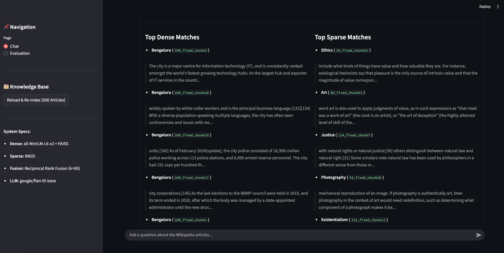
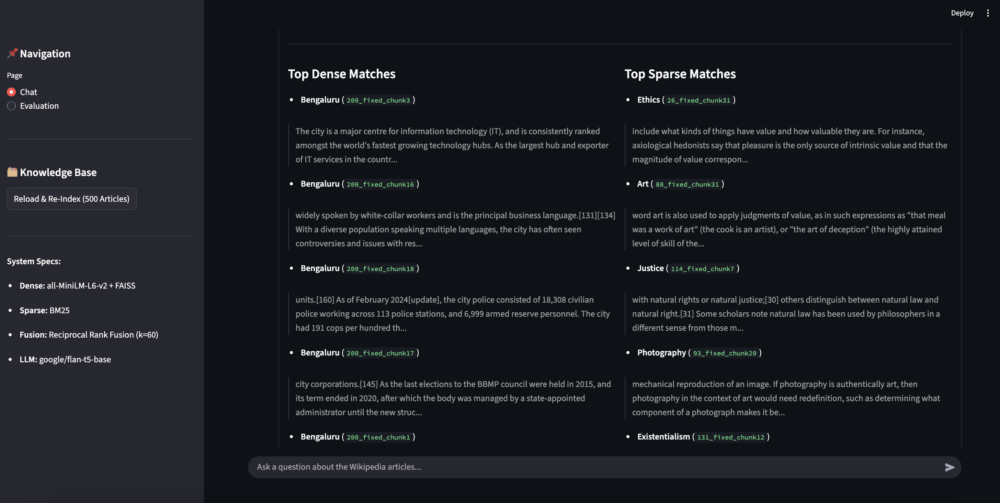

| ID | Question | Ground Truth | Generated Answer | MRR (1/rank) | F1 | CtxPrec | Time (s) |
|---|
| 1 | What is Developmental psychology? | Developmental psychology is the scientific study of how and why humans grow, change, and adapt across the course of their lives. Originally concerned with infants and children, the field has expanded to include adolescence, adult development, aging, and the entire lifespan.[1] Developmental psychologists aim to explain how thinking, feeling, and behaviors change throughout life. This field examines change[2] across three major dimensions, which are physical development, cognitive development, and social emotional development.[3][4] Within these three dimensions are a broad range of topics including motor skills, executive functions, moral understanding, language acquisition, social change, personality, emotional development, self-concept, and identity formation. Developmental psychology explores the influence of both nature and nurture on human development, as well as the processes of change that occur across different contexts over time. Many researchers are interested in the interactions among personal characteristics, the individual's behavior, and environmental factors, including the social context and the built environment. Ongoing debates in regards to developmental psychology include biological essentialism vs. neuroplasticity, and stages of development vs. dynamic systems of development. While research in developmental psychology has certain limitations, ongoing studies aim to understand how life stage transitions and biological factors influence human behavior and development.[5] Developmental psychology involves a range of fields,[2] such as educational psychology, child psychopathology, forensic developmental psychology, child development, cognitive psychology, ecological psychology, and cultural psychology. Influential developmental psychologists from the 20th century include Urie Bronfenbrenner, Erik Erikson, Sigmund Freud, Anna Freud, Jean Piaget, Barbara Rogoff, Esther Thelen, and Lev Vygotsky.[6] Jean-Jacques Rousseau and John B. Watson are typically cited as providing the foundation for modern developmental psychology.[7] In the mid-18th century, Jean Jacques Rousseau described three stages of development: infants (infancy), puer (childhood) and adolescence in Emile: Or, On Education. Rousseau's ideas were adopted and supported by educators at the time. Developmental psychology | science of how and why humans grow, change, and adapt across the course of their lives | 1.0000 | 0.0028 | 0.9333 | 4.7040 |
| 2 | What is Compound of five great dodecahedra? | This uniform polyhedron compound is a composition of 5 great dodecahedra, in the same arrangement as in the compound of 5 icosahedra. It is one of only five polyhedral compounds (along with the compound of six tetrahedra, the compound of two great dodecahedra, the compound of two small stellated dodecahedra, and the compound of five small stellated dodecahedra) which is vertex-transitive and face-transitive but not edge-transitive. This polyhedron-related article is a stub. You can help Wikipedia by adding missing information. | polyhedron | 1.0000 | 0.0260 | 1.0000 | 2.0079 |
| 3 | What is Database? | In computing, a database is an organized collection of data or a type of data store based on the use of a database management system (DBMS), the software that interacts with end users, applications, and the database itself to capture and analyze the data. The DBMS additionally encompasses the core facilities provided to administer the database. The sum total of the database, the DBMS and the associated applications can be referred to as a database system. Often the term "database" is also used loosely to refer to any of the DBMS, the database system or an application associated with the database. Before digital storage and retrieval of data became widespread, index cards were used for data storage in a wide range of applications and environments: in the home to record and store recipes, shopping lists, contact information and other organizational data; in business to record presentation notes, project research and notes, and contact information; in schools as flash cards or other visual aids; and in academic research to hold data such as bibliographical citations or notes in a card file. Professional book indexers used index cards in the creation of book indexes until they were replaced by indexing software in the 1980s and 1990s. Small databases can be stored on a file system, while large databases are hosted on computer clusters or cloud storage. The design of databases spans formal techniques and practical considerations, including data modeling, efficient data representation and storage, query languages, security and privacy of sensitive data, and distributed computing issues, including supporting concurrent access and fault tolerance. Computer scientists may classify database management systems according to the database models that they support. Relational databases became dominant in the 1980s. These model data as rows and columns in a series of tables, and the vast majority use | "database management system" (DBMS) | 1.0000 | 0.0013 | 1.0000 | 2.2913 |
| 4 | What is Information security? | Information security (infosec) is the practice of protecting information by mitigating information risks. It is part of information risk management.[1] It typically involves preventing or reducing the probability of unauthorized or inappropriate access to data or the unlawful use, disclosure, disruption, deletion, corruption, modification, inspection, recording, or devaluation of information. It also involves actions intended to reduce the adverse impacts of such incidents. Protected information may take any form, e.g., electronic or physical, tangible (e.g., paperwork), or intangible (e.g., knowledge).[2][3] Information security's primary focus is the balanced protection of data confidentiality, integrity, and availability (known as the CIA triad, unrelated to the US government organization)[4] while maintaining a focus on efficient policy implementation, all without hampering organization productivity.[5] This is largely achieved through a structured risk management process.[6] To standardize this discipline, academics and professionals collaborate to offer guidance, policies, and industry standards on passwords, antivirus software, firewalls, encryption software, legal liability, security awareness and training, and so forth.[7] This standardization may be further driven by a wide variety of laws and regulations that affect how data is accessed, processed, stored, transferred, and destroyed.[8] While paper-based business operations are still prevalent, requiring their own set of information security practices, enterprise digital initiatives are increasingly being emphasized,[9][10] with information assurance now typically being dealt with by information technology (IT) security specialists. These specialists apply information security to technology (most often some form of computer system). IT security specialists are almost always found in any major enterprise/establishment due to the nature and value of the data within larger businesses.[11] They are responsible for keeping all of the technology within the company secure from malicious attacks that often attempt to acquire critical private information or gain control of the internal systems.[12][13] There are many specialist roles in Information Security including securing networks and | information risk management | 1.0000 | 0.0011 | 1.0000 | 1.4422 |
| 5 | What is Energy? | Energy (from Ancient Greek ἐνέργεια (enérgeia) 'activity') is the quantitative property that is transferred to a body or to a physical system, recognizable in the performance of work and in the form of heat and light. Energy is a conserved quantity—the law of conservation of energy states that energy can be converted in form, but not created or destroyed. The unit of measurement for energy in the International System of Units (SI) is the joule (J). Forms of energy include the kinetic energy of a moving object, the potential energy stored by an object (for instance due to its position in a field), the elastic energy stored in a solid object, chemical energy associated with chemical reactions, the radiant energy carried by electromagnetic radiation, the internal energy contained within a thermodynamic system, and rest energy associated with an object's rest mass. These are not mutually exclusive. All living organisms constantly take in and release energy. The Earth's climate and ecosystems processes are driven primarily by radiant energy from the Sun.[6] The total energy of a system can be subdivided and classified into potential energy, kinetic energy, or combinations of the two in various ways. Kinetic energy is determined by the movement of an object – or the composite motion of the object's components – while potential energy reflects the potential of an object to have motion, generally being based upon the object's position within a field or what is stored within the field itself.[7] While these two categories are sufficient to describe all forms of energy, it is often convenient to refer to particular combinations of potential and kinetic energy as its own form. For example, the sum of translational and rotational kinetic and potential energy within a system is referred to as mechanical energy, whereas nuclear energy refers to | 'activity' | 1.0000 | 0.0003 | 1.0000 | 1.1758 |
| 6 | What is Volcano? | A volcano is commonly defined as a vent or fissure in the crust of a planetary-mass object, such as Earth, that allows hot lava, volcanic ash, and gases to escape from a magma chamber below the surface.[1] On Earth, volcanoes are most often found where tectonic plates are diverging or converging, and because most of Earth's plate boundaries are underwater, most volcanoes are found underwater. For example, a mid-ocean ridge, such as the Mid-Atlantic Ridge, has volcanoes caused by divergent tectonic plates whereas the Pacific Ring of Fire has volcanoes caused by convergent tectonic plates. Volcanoes resulting from divergent tectonic activity are usually non-explosive whereas those resulting from convergent tectonic activity cause violent eruptions.[2][3] Volcanoes can also form where there is stretching and thinning of the crust's plates, such as in the East African Rift, the Wells Gray-Clearwater volcanic field, and the Rio Grande rift in North America. Volcanism away from plate boundaries most likely arises from upwelling diapirs from the core–mantle boundary called mantle plumes, 3,000 kilometres (1,900 mi) deep within Earth. This results in hotspot volcanism or intraplate volcanism, in which the plume may cause thinning of the crust and result in a volcanic island chain due to the continuous movement of the tectonic plate, of which the Hawaiian hotspot is an example.[4] Volcanoes are usually not created at transform tectonic boundaries where two tectonic plates slide past one another. Volcanoes, based on their frequency of eruption or volcanism, are referred to as either active, dormant, or extinct.[5] Active volcanoes have a history of volcanism and are likely to erupt again, while extinct ones are not capable of eruption at all as they have no magma source. "Dormant" volcanoes have not erupted in a long time – generally accepted as since the start of the Holocene, about 12,000 | volcanoes | 1.0000 | 0.0003 | 1.0000 | 1.4071 |
| 7 | What is List of storms named Brenda? | The name Brenda has been used for nine tropical cyclones worldwide, including five in the Atlantic Ocean. In the Atlantic: In the Western Pacific Ocean: In the South-West Indian: In the Australian region: | list of acts of the Parliament of Great Britain | 1.0000 | 0.0000 | 1.0000 | 2.2624 |
| 8 | What is The Konstantinos Staikos' book collection? | The book collection of Konstantinos Staikos is now part of the Alexander S. Onassis Public Benefit Foundation Library[1][2] It is centered on the intellectual, printing and publishing activity of the Greeks from the Fall of Constantinople in 1453 to the late 19th century. The aim of its creation was to collect and present relevant material from that time period. The genesis of the book collection dates from the 1970s. The bibliophilic interests of Konstantinos Staikos changed radically. In those years also, the Hellenic Bibliophile Society was established [3] under the Honorary Presidency of Constantinos Tsatsos. The exhibitions of books of the Society (1975) with travellers' accounts: 'Travellers in Greece from the fifteenth century to 1821', or with printed material regarding the chronicle of Greek typography: 'Outset of Greek typography' (1976) radically altered Konstantinos Staikos interests as collector and from then on he consciously turned to the study and research of the pioneers of Greek printing and the relations they cultivated with the world of books in Venice and elsewhere. His acquaintance with Georgios Ladas, who was profoundly conscious of the role played by printed books during the Ottoman domination and who collected and documented the bibliographic identity of an enormous number of books that came into his hands, empowered Konstantinos Staikos' intention to explore the chronicle of Greek typography in greater depth. The initial approach was to record printers' marks and emblems characterizing printed Greek books, resulting in the planning of the Charta of Greek Printing. At the same time the collection began to take shape, with the purchase of books entirely compatible with the terms regulating the Hellenic Bibliography as recorded by É. Legrand, printed material, that is to say, testifying to the pains and labours of the printing workshops. From 1986 the most representative body of the Konstantinos | Greeks from the Fall of Constantinople | 1.0000 | 0.0188 | 1.0000 | 2.4323 |
| 9 | What is Mineral? | In geology and mineralogy, a mineral or mineral species is, broadly speaking, a solid substance with a fairly well-defined chemical composition and a specific crystal structure that occurs naturally in pure form.[1][2] The geological definition of mineral normally excludes compounds that occur only in living organisms. However, some minerals are often biogenic (such as calcite) or chemically organic compounds (such as mellite). Moreover, living organisms often synthesize inorganic minerals (such as hydroxylapatite) that also occur in rocks. The concept of mineral is distinct from rock, which is any bulk solid geologic material that is relatively homogeneous at a large enough scale. A rock may consist of one type of mineral or may be an aggregate of two or more different types of minerals, spacially segregated into distinct phases.[3] Some natural solid substances without a definite crystalline structure, such as opal or obsidian, are more properly called mineraloids.[4] If a chemical compound occurs naturally with different crystal structures, each structure is considered a different mineral species. Thus, for example, quartz and stishovite are two different minerals consisting of the same compound, silicon dioxide. The International Mineralogical Association (IMA) is the generally recognized standard body for the definition and nomenclature of mineral species. As of May 2025[update], the IMA recognizes 6,145 official mineral species.[5] The chemical composition of a named mineral species may vary somewhat because the inclusion of small amounts of impurities. Specific varieties of a species sometimes have conventional or official names of their own.[6] For example, amethyst is a purple variety of the mineral species quartz. Some mineral species can have variable proportions of two or more chemical elements that occupy equivalent positions in the mineral's structure; for example, the formula of mackinawite is given as (Fe,Ni)9S8, meaning FexNi9-xS8, where x is a variable number between 0 and 9. | a solid substance | 1.0000 | 0.0004 | 1.0000 | 2.5680 |
| 10 | What is Funeral? | A funeral is a ceremony connected with the final disposition of a corpse, such as a burial, entombment or cremation with the attendant observances.[1] Funerary customs comprise the complex of beliefs and practices used by a culture to remember and respect the dead, from interment, to various monuments, prayers, and rituals undertaken in their honour. Customs vary between cultures and religious groups. Funerals have both normative and legal components. Common secular motivations for funerals include mourning the deceased, celebrating their life, and offering support and sympathy to the bereaved; additionally, funerals may have religious aspects that are intended to help the soul of the deceased reach the afterlife, resurrection or reincarnation. The funeral usually includes a ritual through which the corpse receives a final disposition.[2] Depending on culture and religion, these can involve either the destruction of the body (for example, by cremation, sky burial, decomposition, disintegration or dissolution) or its preservation (for example, by mummification). Differing beliefs about cleanliness and the relationship between body and soul are reflected in funerary practices. A memorial service (service of remembrance or celebration of life) is a funerary ceremony that is performed without the remains of the deceased person.[3] In both a closed casket funeral[4] and a memorial service, photos of the deceased representing stages of life would be displayed on an altar. Relatives or friends would give out eulogies in both services as well.[5] The word funeral comes from the Latin funus, which had a variety of meanings, including the corpse and the funerary rites themselves. Funerary art is art produced in connection with burials, including many kinds of tombs, and objects specially made for burial like flowers with a corpse. Funeral rites pre-date modern Homo sapiens and dated to at least 300,000 years ago.[6] For example, in the Shanidar Cave in | ceremony connected with the final disposition of a corpse | 1.0000 | 0.0013 | 1.0000 | 2.9263 |
| 11 | What is Dartmouth Jack-O-Lantern? | The Dartmouth Jack-O-Lantern (also known as the Jacko)[1] is a college humor magazine, founded at Dartmouth College in 1908. One of the magazine's oldest traditions is "Stockman's Dogs". In the October 1934 issue, F.C. Stockman (class of 1935) drew a single-panel cartoon of two dogs talking to each other. That same cartoon has appeared in virtually every issue published since, always with a different caption.[2] The magazine is alluded to in the opening lines of F. Scott Fitzgerald's short story "The Lost Decade", which was first published in Esquire in 1939.[3] Jack-O-Lantern writers Nic Duquette and Chris Plehal invented the unofficial Dartmouth mascot Keggy the Keg in the fall of 2003.[4] From 1972 to 1974 the Editor in chief was playwright Robert DeKanter '74. Among the first Dartmouth women on the staff was Barbara Donnelly, '77, later a writer for the Wall Street Journal. DeKanter was succeeded by the team Brad Brinegar and Maxwell Anderson, both '77. One evening in July, 1975, cartoonists Brian "Hojo" Hansen '76 and Mike Mosher '77 slipped in and painted a cubist rendition of bibulous alumni in translucent acrylic washes upon the wall. When this was eradicated the following week, Hansen and Mosher replaced it with a Renaissance-style "pittura infamante" (topic of an art history lecture in Carpenter Hall) called Allegory of the Evisceration of Humor, depicting Brinegar and Anderson abusing a Jack-O-Lantern figure. "This was the perfect crime" enthused Hansen, "for to paint it over would prove our point: that they have no sense of humor." From 1976 to 1978 the Editor was N. Brooks Clark, who published a Jack-O-Lantern calendar during his tenure. Clark wrote a parody of the controversial college-issued sex guide, which he called Thrilling Contraception Comics and Stories, illustrated by Mosher and featuring a wisecracking spermatozoic guide, Snappy Sammy Sperm. | a college humor magazine | 1.0000 | 0.0144 | 1.0000 | 2.0526 |
| 12 | What is Chelsea F.C.–Liverpool F.C. rivalry? | The Chelsea F.C.–Liverpool F.C. rivalry is an inter-city rivalry between English professional football clubs Chelsea and Liverpool. Chelsea play their home games at Stamford Bridge, while Liverpool play their home games at Anfield. Though both clubs have frequently competed in the same division for over a century, the modern rivalry between Chelsea and Liverpool began in the early 2000s, when the two clubs clashed repeatedly in cup competitions, particularly in the FA Cup, the League Cup, and the UEFA Champions League. The clubs have competed in seven major cup finals: the 2005 League Cup final, which Chelsea won 3–2 after extra time, the 2006 Community Shield, which Liverpool won 2–1, the 2012 FA Cup final, which Chelsea won 2–1, the 2019 UEFA Super Cup, which Liverpool won 5–4 on penalties, the 2022 EFL Cup and FA Cup finals, both of which saw Liverpool win on penalties after two goalless affairs, and the 2024 EFL Cup final, which Liverpool won 1–0 after extra time. The two clubs also met in five consecutive Champions League campaigns; in the group stage of the 2005–06 season, where both legs finished as goalless draws, in the quarter-finals of the 2008–09 season, which Chelsea won 7–5 on aggregate, and in the semi-finals of the 2004–05, 2006–07 and 2007–08 seasons, with Liverpool winning the former two and Chelsea winning the latter one.[1][2] Overall, Liverpool have won more of the meetings, defeating Chelsea 87 times to their 67 wins, and a further 46 games ended in draws, as of their latest clash in October 2025. Chelsea's record win over the Reds was a 6–1 thrashing at Stamford Bridge in August 1937, whereas Liverpool's biggest win was a 6–0 home win in April 1935. In 1904, Gus Mears acquired the Stamford Bridge athletics stadium in Fulham with the aim | an inter-city rivalry | 1.0000 | 0.0013 | 1.0000 | 2.0823 |
| 13 | What is Photography? | This is an accepted version of this page Photography is the art, application, and practice of creating images by recording light, either electronically by means of an image sensor, or chemically by means of a light-sensitive material such as photographic film. It is employed in many fields of science, manufacturing (e.g., photolithography), and business, as well as its more direct uses for art, film and video production, recreational purposes, hobby, and mass communication.[1] A person who operates a camera to capture or take photographs is called a photographer, while the captured image, also known as a photograph, is the result produced by the camera. Typically, a lens is used to focus the light reflected or emitted from objects into a real image on the light-sensitive surface inside a camera during a timed exposure. With an electronic image sensor, this produces an electrical charge at each pixel, which is electronically processed and stored in a digital image file for subsequent display or processing. The result with photographic emulsion is an invisible latent image, which is later chemically "developed" into a visible image, either negative or positive, depending on the purpose of the photographic material and the method of processing. A negative image on film is traditionally used to photographically create a positive image on a paper base, known as a print, either by using an enlarger or by contact printing. Before the emergence of digital photography, photographs that utilized film had to be developed to produce negatives or projectable slides, and negatives had to be printed as positive images, usually in enlarged form. This was typically done by photographic laboratories, but many amateur photographers, students, and photographic artists did their own processing. The word "photography" was created from the Greek roots φωτός (phōtós), genitive of φῶς (phōs), "light"[2] and γραφή (graphé) | the art, application, and practice of creating images by recording light, either electronically by means of an image sensor, or chemically by means of a light-sensitive material such as photographic film | 1.0000 | 0.0098 | 1.0000 | 5.3392 |
| 14 | What is Ferrari 166 S? | The Ferrari 166 S is a sports car built by Ferrari between 1948 and 1953, as a evolution of its Colombo V12-powered 125 S racer. It was adapted into a sports car for the street in the form of the 166 Inter. Only 12 Ferrari 166 S were produced, nine of them with cycle-fenders as the Spyder Corsa. It was soon followed by the updated and highly successful Ferrari 166 MM (Mille Miglia), of which 47 were made from 1948 to 1953. Its early victories in the Targa Florio and Mille Miglia and others in international competition made the manufacturer a serious competitor in the racing industry.[4] Both were later replaced by the 2.3 L 195 S. The 166 shared its Aurelio Lampredi-designed tube frame[5] and double wishbone/live axle suspension with the 125. Like the 125, the wheelbase was 2420 mm long. Nine 166 Spyder Corsas and three 166 Sports were built. The first two 166 S models were coachbuilt by Carrozzeria Allemano and the last one by Carlo Anderloni at Carrozzeria Touring. Majority of the 166 MM cars were bodied at Touring in a barchetta form. The 1.5 L Gioacchino Colombo-designed V12 engine of the 125 was changed, however, with single overhead camshafts specified and a larger 2.0 L (1995 cc/121 in³) displacement. This was achieved with both a bore and stroke increase, to 60 by 58.8 mm respectively. Output was 110 PS (81 kW) at 5,600 rpm to 130 PS (96 kW) at 6,500 rpm with three carburetors, giving top speed of 170–215 km/h (106–134 mph).[6][7] For the 166 MM power output rose to 140 PS (103 kW) at 6,600 rpm and top speed to 220 km/h (137 mph).[8] Motor Trend Classic named the 166 MM Barchetta as number six in their list of the ten "Greatest Ferraris | a sports car | 1.0000 | 0.0074 | 1.0000 | 2.8671 |
| 15 | What is Jack Keeney? | John Christopher "Jack" Keeney (February 19, 1922 – November 19, 2011) was an American prosecutor who retired in 2010 as U.S. deputy United States Assistant Attorney General. At age 88, he was at the time the DOJ's oldest employee, and one of the longest-serving career employees in the history of the United States government. Upon his retirement, Keeney was the longest-serving federal prosecutor in American history.[1] Keeney spent decades in the United States Department of Justice Criminal Division, starting in 1951. On numerous occasions, Keeney served as Acting Assistant Attorney General. Keeney was born in Ashley, Pennsylvania, on February 19, 1922.[1] Keeney was a pilot in the Army Air Corps during World War II, and was held by German forces as a prisoner of war. Keeney graduated from the University of Scranton in 1947.[1] He received law degrees from Dickinson School of Law in 1949 and from George Washington University Law School in 1953.[1] In 2000, the Justice Department named one of its buildings (1301 New York Avenue, N.W., Washington, D.C.) after Keeney, an honor rarely bestowed on a living person.[1] In the month following his death, the Justice Department created the John C. Keeney Award for Exceptional Integrity and Professionalism. The John C. Keeney Award recognizes a Justice Department employee who has demonstrated outstanding professionalism and integrity over a sustained period of time or an employee who has displayed extraordinary strength of character in a unique situation, as Mr. Keeney displayed during his years of service to the federal government.[2] Keeney died on November 19, 2011, at his home in Kensington, Maryland, aged 89.[3] This American law–related biographical article is a stub. You can help Wikipedia by adding missing information. | U.S. | 0.5000 | 0.0148 | 1.0000 | 2.4831 |
| 16 | What is Ocean? | The ocean is the body of salt water that covers approximately 70.8% of Earth.[8] The ocean is conventionally divided into large bodies of water, which are also referred to as oceans (in descending order by area: the Pacific Ocean, the Atlantic Ocean, the Indian Ocean, the Antarctic/Southern Ocean, and the Arctic Ocean),[9][10][11] and are themselves mostly divided into seas, gulfs and subsequent bodies of water. The ocean contains 97% of Earth's water[8] and is the primary component of Earth's hydrosphere, acting as a huge reservoir of heat for Earth's energy budget, as well as for its carbon cycle and water cycle, forming the basis for climate and weather patterns worldwide. The ocean is essential to life on Earth, harbouring most of Earth's animals and protist life,[12] originating photosynthesis and therefore Earth's atmospheric oxygen, still supplying half of it.[13] Ocean scientists split the ocean into vertical and horizontal zones based on physical and biological conditions. Horizontally the ocean covers the oceanic crust, which it shapes. Where the ocean meets dry land it covers relatively shallow continental shelfs, which are part of Earth's continental crust. Human activity is mostly coastal with high negative impacts on marine life. Vertically the pelagic zone is the open ocean's water column from the surface to the ocean floor. The water column is further divided into zones based on depth and the amount of light present. The photic zone starts at the surface and is defined to be "the depth at which light intensity is only 1% of the surface value"[14]: 36 (approximately 200 m in the open ocean). This is the zone where photosynthesis can occur. In this process plants and microscopic algae (free-floating phytoplankton) use light, water, carbon dioxide, and nutrients to produce organic matter. As a result, the photic zone is the most biodiverse | body of water | 1.0000 | 0.0006 | 1.0000 | 3.2825 |
| 17 | What is Grete Jenny? | Grete Jenny (27 February 1930 – 15 November 2015)[1] was an Austrian sprinter. She competed in the women's 4 × 100 metres relay at the 1948 Summer Olympics.[2] This biographical article relating to Austrian athletics is a stub. You can help Wikipedia by adding missing information. | sprinter | 1.0000 | 0.0455 | 1.0000 | 3.1585 |
| 18 | What is Neuroplasticity? | Neuroplasticity, also known as neural plasticity or just plasticity, is the medium of neural networks in the brain to change through growth and reorganization. Neuroplasticity refers to the brain's ability to reorganize and rewire its neural connections, enabling it to adapt and function in ways that differ from its prior state. This process can occur in response to learning new skills, experiencing environmental changes, recovering from injuries, or adapting to sensory or cognitive deficits. Such adaptability highlights the dynamic and ever-evolving nature of the brain, even into adulthood.[1] These changes range from individual neuron pathways making new connections, to systematic adjustments like cortical remapping or neural oscillation. Other forms of neuroplasticity include homologous area adaptation, cross modal reassignment, map expansion, and compensatory masquerade.[2] Examples of neuroplasticity include circuit and network changes that result from learning a new ability, information acquisition,[3] environmental influences,[4] pregnancy,[5] caloric intake,[6] practice/training,[7] and psychological stress.[8] Neuroplasticity was once thought by neuroscientists to manifest only during childhood,[9][10] but research in the later half of the 20th century showed that many aspects of the brain exhibit plasticity through adulthood.[11] The developing brain exhibits a higher degree of plasticity than the adult brain.[12] Activity-dependent plasticity can have significant implications for healthy development, learning, memory, and recovery from brain damage.[13][14][15] The term plasticity was first applied to behavior in 1890 by William James in The Principles of Psychology where the term was used to describe "a structure weak enough to yield to an influence, but strong enough not to yield all at once".[16][17] The first person to use the term neural plasticity appears to have been the Polish neuroscientist Jerzy Konorski.[11][18] One of the first experiments providing evidence for neuroplasticity was conducted in 1793, by Italian anatomist Michele Vincenzo Malacarne, who described experiments in which he paired animals, trained one | the medium of neural networks in the brain | 1.0000 | 0.0019 | 1.0000 | 4.2068 |
| 19 | What is Robots (2005 film)? | Robots is a 2005 American animated science fiction comedy film directed by Chris Wedge and written by David Lindsay-Abaire, Lowell Ganz and Babaloo Mandel. Produced by 20th Century Fox Animation and Blue Sky Studios, it stars the voices of Ewan McGregor, Halle Berry, Greg Kinnear, Mel Brooks, Amanda Bynes, Drew Carey and Robin Williams. The story follows an ambitious inventor robot named Rodney Copperbottom, who seeks to work for his idol Bigweld's company in Robot City, but discovers a plot by its new leader Phineas T. Ratchet and his mother to forcibly upgrade the city's populace and eradicate struggling robots, known as "outmodes". Development of the film began in 2000, following a failed attempt by Wedge and children's author William Joyce to adapt Joyce's 1993 children's book Santa Calls. They instead decided to create an original story based on robots. The project was approved by executive producer Chris Meledandri in 2001 and production began the next year. Robots premiered at the Mann Village Theatre in Westwood, Los Angeles, on March 6, 2005, and was released in the United States on March 11 by 20th Century Fox. The film was praised by critics for its humor, animation, and performances, while its story and characters were deemed somewhat formulaic.[4] The film was commercially successful, grossing $262.5 million worldwide against a $75–80 million budget. A sequel was discussed but never produced due to the studio shifting focus to its flagship franchise, Ice Age.[5] In a world of robots, Rodney Copperbottom, son of Herb and Lydia Copperbottom, is an aspiring young inventor from the city of Rivet Town. He idolizes Bigweld, a famous inventor and philanthropist whose company, Bigweld Industries, employs other inventors and provides poor robots with spare parts. Rodney develops a small, flying robot named Wonderbot to assist his father, who works | animated science fiction comedy film | 0.5000 | 0.0060 | 1.0000 | 4.5309 |
| 20 | What is Richelieu, Kentucky? | Richelieu is an unincorporated community in Logan County and Butler County, Kentucky, United States.[1] Richelieu is located near Logan County's northeastern boundary with Butler County along Kentucky Route 1038. It is also located near the tripoint where Logan and Butler County boundaries meet with those of Warren County.[2] This Logan County, Kentucky state location article is a stub. You can help Wikipedia by adding missing information. This Butler County, Kentucky state location article is a stub. You can help Wikipedia by adding missing information. | unincorporated community | 1.0000 | 0.0471 | 1.0000 | 3.6566 |
| 21 | What is Barbara Walters? | Barbara Jill Walters (September 25, 1929 – December 30, 2022) was an American broadcast journalist and television personality.[1][2] Known for her interviewing ability and popularity with viewers, she appeared as a host of numerous television programs, including Today, the ABC Evening News, 20/20, and The View. Walters was a working journalist from 1951 until her retirement in 2014.[3][4][5] Walters was inducted into the Television Hall of Fame in 1989, received a Lifetime Achievement Award from the NATAS in 2000 and a star on the Hollywood Walk of Fame in 2007. Walters began her career at WNBT-TV (NBC's flagship station in New York) in 1953 as writer-producer of a news-and-information program aimed at the juvenile audience, Ask the Camera, hosted by Sandy Becker. She joined the staff of the network's Today show in the early 1960s as a writer and segment producer of women's-interest stories. Her popularity with viewers led to her receiving more airtime, and in 1974 she became co-host of the program, the first woman to hold such a position on an American news program.[6][7][8] During 1976, she continued to be a pioneer for women in broadcasting while becoming the first American female co-anchor of a network evening news program, alongside Harry Reasoner on the ABC Evening News. Walters was a correspondent, producer and co-host on the ABC news magazine 20/20 from 1979 to 2004. She became known for an annual special aired on ABC, Barbara Walters' 10 Most Fascinating People. During her career, Walters interviewed every sitting U.S. president and first lady from Richard and Pat Nixon to Barack and Michelle Obama.[9][10] She also interviewed both Donald Trump and Joe Biden, although not when either was president. She also gained acclaim and notoriety for interviewing subjects such as Fidel Castro, Anwar Sadat, Menachem Begin, Katharine Hepburn, Sean Connery, | talk show | 1.0000 | 0.0011 | 1.0000 | 4.0593 |
| 22 | What is List of Cantharis species? | This is a list of 95 species in Cantharis, a genus of soldier beetles in the family Cantharidae.[1][2][3] Data sources: i = ITIS,[1] c = Catalogue of Life,[4] g = GBIF,[2] b = Bugguide.net,[3] f = Fauna Europaea[5] | a list of 95 species | 1.0000 | 0.1860 | 1.0000 | 4.1155 |
| 23 | What is The Gray Nun of Belgium? | The Gray Nun of Belgium was a 1915 film announced for release on the Alliance Program by Dramatic Feature Films, Frank Joslyn Baum's short-lived successor to The Oz Film Manufacturing Company. Despite the advertising in Motion Picture News announcing its release date, Katharine Rogers, in L. Frank Baum: Creator of Oz, believes that Alliance found the film inferior and refused to distribute it. The exhibition copy, which may have been a work print, may have been the only copy ever struck. Baum himself thought that exchanges and exhibitors dismissed the film "rather arbitrarily" based on the Oz Company name.[1] In the film, Betty Pierce played a Mother Superior who aided Allied soldiers during World War I. Cathrine Countiss played the title role. It also starred David Proctor, Mae Wells, Katherine Griffith, Raymond Russell, Robert Dunbar, Harry Clements, and James Spencer.[2] Wells and Russell were prominent actors in the Oz Company, having played roles such as Mombi and Dr. Pipt, respectively. This article about a film on World War I is a stub. You can help Wikipedia by adding missing information. This article relating to "The Wonderful Wizard of Oz" or one of its derivative works is a stub. You can help Wikipedia by adding missing information. | 1915 film | 1.0000 | 0.0207 | 1.0000 | 3.5890 |
| 24 | What is Artur Serobyan? | Artur Serobyan (Armenian: Արթուր Սերոբյան, born 2 July 2003) is an Armenian professional footballer who plays as a winger or forward for Armenian Premier League club Ararat-Armenia, and the Armenia national team.[citation needed] Artur Serobyan is a graduate of the Yerevan Football Academy. At the age of 17, he already played in the senior team of Ararat-Armenia.[1] In August 2021, his loan transfer to BKMA was announced.[2] On 1 September 2023, his loan transfer to Portugal's top league club Casa Pia was announced until the end of the 2023–24 season.[3] On 10 January 2024, Casa Pia terminated Serobyan's loan and he returned to Ararat-Armenia.[4] On 14 January 2025, Serobyan signed for Sheriff Tiraspol on loan.[5][6] On 16 August 2025, Sheriff announced that Serobyan had left the club after his loan deal had been ended by mutual agreement.[7] Serobyan made his senior international debut for Armenia national team on 24 March 2022 in a friendly game against Montenegro, where he came in off the bench and played the last 20 minutes.[8] Sheriff Tiraspol Ararat-Armenia Individual | professional footballer | 1.0000 | 0.0226 | 1.0000 | 3.3394 |
| 25 | What is Climate change? | Present-day climate change includes both global warming—the ongoing increase in global average temperature—and its wider effects on Earth's climate system. Climate change in a broader sense also includes previous long-term changes to Earth's climate. The modern-day rise in global temperatures is driven by human activities, especially fossil fuel (coal, oil and natural gas) burning since the Industrial Revolution.[3][4] Fossil fuel use, deforestation, and some agricultural and industrial practices release greenhouse gases.[5] These gases absorb some of the heat that the Earth radiates after it warms from sunlight, warming the lower atmosphere. Earth's atmosphere now has roughly 50% more carbon dioxide, the main gas driving global warming, than it did at the end of the pre-industrial era, reaching levels not seen for millions of years.[6] Climate change has an increasingly large impact on the environment. Deserts are expanding, while heat waves and wildfires are becoming more common.[7] Amplified warming in the Arctic has contributed to thawing permafrost, retreat of glaciers and sea ice decline.[8] Higher temperatures are also causing more intense storms, droughts, and other weather extremes.[9] Rapid environmental change in mountains, coral reefs, and the Arctic is forcing many species to relocate or become extinct.[10] Even if efforts to minimize future warming are successful, some effects will continue for centuries. These include ocean heating, ocean acidification and sea level rise.[11] Climate change threatens people with increased flooding, extreme heat, increased food and water scarcity, more disease, and economic loss.[12] Human migration and conflict can also be a result.[13] The World Health Organization calls climate change one of the biggest threats to global health in the 21st century.[14] Societies and ecosystems will experience more severe risks without action to limit warming.[15] Adapting to climate change through efforts like flood control measures or drought-resistant crops partially reduces climate change risks, although some | global warming and its effects on Earth's climate system | 1.0000 | 0.0021 | 1.0000 | 3.9514 |
| 26 | What is Parabothria? | Parabothria is a genus of parasitic flies in the family Tachinidae. There is one described species in Parabothria, P. punoensis.[1][2] This article related to members of the fly family Tachinidae is a stub. You can help Wikipedia by adding missing information. | genus of parasitic flies | 1.0000 | 0.1860 | 1.0000 | 3.6972 |
| 27 | What is Ted Scherman? | Ted Scherman (born October 3, 1966) is a former professional tennis player from the United States. Scherman was born in San Francisco and in 1985 represented the United States in the Junior Davis Cup competition.[1] In the late 1980s he played at UC Berkeley, where he achieved All-American honors in 1987 and 1988.[2] Following his graduation in 1989 he turned professional. A right-handed player, Scherman played in the main draw of the Queensland Open in 1989, beating Grant Connell in the first round, before being eliminated in the second round by Niclas Kroon.[3] Most of his appearances at the top level of the professional tour were in doubles. He made it to 114 in the world in that format and was a semi-finalist in the ATP Tour tournament at Bordeaux in 1991, with Ģirts Dzelde.[4] A two-time Challenger title winner, he also competed in the main draw of four Grand Slam tournaments. | tennis player | 1.0000 | 0.0276 | 1.0000 | 2.7050 |
| 28 | What is Lisa Carlsen (basketball)? | Lisa Carlsen is an American women's basketball coach and former basketball player. She was recently the women's basketball head coach at Northern Illinois University. She previously served as the women's basketball head coach at Lewis University and the University of Nebraska Omaha.[1] Carlson is from Earling, Iowa.[2] She attended Northwest Missouri State University where she played college basketball and was a named all-conference four times.[1] She was named 1992 Champion NCAA Female Athlete of the Year after her senior year. She also played college softball where she earned all-conference and all-region accolades.[2] She earned a bachelor's degree in 1992 and a master's degree in 1994 from Northwest Missouri State.[1] She played basketball professionally in the Women's Basketball Association for three seasons with the Nebraska Express.[2] Prior to coaching basketball, she was a softball coach at St. Mary (Neb.) from 1994 to 1997 where she was the Midlands Collegiate Athletic Conference Coach of the Year twice.[1] At Wayne State College (Neb.) she was the softball head coach and an assistant volleyball coach from 1997 to 1998. Her overall record as a softball coach was 120–51.[2] Her first job as a basketball coach was in 1998 as an assistant at Omaha then in NCAA Division II.[3][1] She was promoted to head coach in 2000 where she remained for four seasons with a record of 36–75.[2] She was the associate head coach at Winona State for three years before taking the women's basketball head coaching position at Lewis in 2007.[2] In eight seasons at Lewis she posted an overall record of 148–89 with appearances in the NCAA Division II women's basketball tournament and two Great Lakes Valley Conference championships.[4] Her 2015 team went 31–3 and made the Division II Elite Eight.[5] They began the season 23–0.[6] She was named GLVC Coach of the | overall record of 148–89 | 1.0000 | 0.0242 | 1.0000 | 2.4600 |
| 29 | What is Murder of Patricia Allen? | On November 13, 1991, Patricia Allen, a 31-year-old lawyer, was murdered by her estranged husband, Colin McGregor, with a crossbow in downtown Ottawa, Ontario, Canada.[1] McGregor was found guilty of first degree murder and sentenced to life in prison. The murder received national media coverage because it was the first instance, in Canada, of spousal homicide using a crossbow, which was a way to get around gun ownership laws and restrictions, and acquire a deadly weapon (though there have been several similar crossbow crimes since then).[2] Patricia Allen, the only daughter of George and Maisie Allen, grew up with two brothers. Allen earned her bachelor's degree in philosophy at university in Ottawa.[3] Allen attended the McGill University Faculty of Law, where she graduated at the top her class in 1988[4] and won the prize for the highest achievement in civil law.[5][3] In 1989 she moved to Ottawa with McGregor, where she worked as a lawyer for Revenue Canada.[6][7] Colin McGregor (born in 1961) was the eldest of three boys of a Montreal business man, owner of a travel agency, and grew up in Westmount. He attended Westmount High School and at Marianopolis College he was valedictorian and student union president.[8][9][3][4] He played junior (U20) rugby with the Westmount Rugby Club and he was a champion debater at McGill University, having won the Princeton University Debate Tournament in 1982.[9][8] The pair met at McGill University while Allen was studying law and McGregor was studying philosophy. After graduation they married and moved to Ottawa.[3][4] Their relationship was described as rocky by family and friends, as they frequently fought and McGregor was perceived as jealous and possessive.[5] By 1990 they bought a home and Allen was working as a lawyer with Revenue Canada.[5][4][10] During this time McGregor bounced between jobs, working as a | crime | 1.0000 | 0.0014 | 1.0000 | 2.6923 |
| 30 | What is Goold v Collins? | Goold v Collins and Ors [2004] IESC 38, [2004] 7 JIC 1201 is an Irish Supreme Court case in which the Court ruled that a statutory provision's constitutionality may be reviewed only at the behest of a litigant who is contesting some current application of that provision.[1][2] Eileen Goold had been the subject of a protection order, dated 18 September 2002, compelling her to restrain from violent behaviour towards her husband. In suspected violation of this order she was twice arrested. By agreement with her husband, this order was discharged on 21 November, and, the following day, her husband wrote to the police withdrawing his complaints. On 29 January 2003, the associated criminal charges against Goold were dismissed. On 17 December 2002, Goold obtained leave to apply to the High Court (McKechnie J.) for judicial review of the constitutionality of Section 5 of the Domestic Violence Act, 1996, on the authority of which, the protection order had been issued. The State argued that these proceedings should be disallowed due to their mootness.[3] On succeeding only in part before the High Court, the State appealed to the Supreme Court. In the earlier case of DK v Crowley,[4] the Court had found other provisions of the Domestic Violence Act relating to orders barring a spouse from the family home to be unconstitutional for: "[F]ailing to prescribe a fixed period of relatively short duration during which an interim barring order made ex parte is to continue in force, deprived the respondents to such applications of the protection of the principle of audi alteram partem in a manner and to an extent which is disproportionate, unreasonable and unnecessary."[4] The Court distinguished DK v Crowley on the basis that, at the time of the application for judicial review of the underlying legislation, no agreement had | a statutory provision's constitutionality may be reviewed only at the behest of a litigant who is contesting some current application of that provision | 1.0000 | 0.0986 | 1.0000 | 5.0831 |
| 31 | What is Age of Enlightenment? | The Age of Enlightenment (also the Age of Reason) was a period in the history of Europe and Western civilization[1] during which the Enlightenment,[b] an intellectual[6] and cultural[6] movement, flourished, emerging in the late 17th century[6] in Western Europe[7] and reaching its peak in the 18th century, as its ideas spread more widely across Europe[7] and into the European colonies, in the Americas and Oceania.[8][9][10] Characterized by an emphasis on reason, empirical evidence, and the scientific method, the Enlightenment promoted ideals of individual liberty, religious tolerance, progress, and natural rights. Its thinkers advocated for constitutional government, the separation of church and state, and the application of rational principles to social and political reform.[11][12][13] The Enlightenment emerged from and built upon the Scientific Revolution of the 16th and 17th centuries, which had established new methods of empirical inquiry through the work of figures such as Galileo Galilei, Johannes Kepler, Francis Bacon, Pierre Gassendi, Christiaan Huygens and Isaac Newton. Philosophical foundations were laid by thinkers including René Descartes, Thomas Hobbes, Baruch Spinoza, and John Locke, whose ideas about reason, natural rights, and empirical knowledge became central to Enlightenment thought. The dating of the period of the beginning of the Enlightenment can be attributed to the publication of Descartes' Discourse on the Method in 1637, with his method of systematically disbelieving everything unless there was a well-founded reason for accepting it, and featuring his dictum, Cogito, ergo sum ('I think, therefore I am'). Others cite the publication of Newton's Principia Mathematica (1687) as the culmination of the Scientific Revolution and the beginning of the Enlightenment.[14][15][16] European historians traditionally dated its beginning with the death of Louis XIV of France in 1715 and its end with the outbreak of the French Revolution in 1789. Many historians now date the end of the Enlightenment as | an intellectual and cultural movement | 1.0000 | 0.0005 | 1.0000 | 2.5160 |
| 32 | What is Decision theory? | Decision theory or the theory of rational choice is a branch of probability, economics, and analytic philosophy that uses expected utility and probability to model how individuals would behave rationally under uncertainty.[1][2] It differs from the cognitive and behavioral sciences in that it is mainly prescriptive and concerned with identifying optimal decisions for a rational agent, rather than describing how people actually make decisions. Despite this, the field is important to the study of real human behavior by social scientists, as it lays the foundations to mathematically model and analyze individuals in fields such as sociology, economics, criminology, cognitive science, moral philosophy and political science.[citation needed] The roots of decision theory lie in probability theory, developed by Blaise Pascal and Pierre de Fermat in the 17th century, which was later refined by others like Christiaan Huygens. These developments provided a framework for understanding risk and uncertainty, which are central to decision-making. In the 18th century, Daniel Bernoulli introduced the concept of "expected utility" in the context of gambling, which was later formalized by John von Neumann and Oskar Morgenstern in the 1940s. Their work on Game Theory and Expected Utility Theory helped establish a rational basis for decision-making under uncertainty. After World War II, decision theory expanded into economics, particularly with the work of economists like Milton Friedman and others, who applied it to market behavior and consumer choice theory. This era also saw the development of Bayesian decision theory, which incorporates Bayesian probability into decision-making models. By the late 20th century, scholars like Daniel Kahneman and Amos Tversky challenged the assumptions of rational decision-making. Their work in behavioral economics highlighted cognitive biases and heuristics that influence real-world decisions, leading to the development of prospect theory, which modified expected utility theory by accounting for psychological factors. Normative decision theory is | a branch of probability, economics, and analytic philosophy | 1.0000 | 0.0087 | 1.0000 | 3.2523 |
| 33 | What is Tanya Plibersek? | Tanya Joan Pliberšek[a] (born 2 December 1969) is an Australian politician who has served as Minister for Social Services since 2025 and the member of parliament (MP) for the New South Wales division of Sydney since 1998. Previously, she served as the Minister for the Environment and Water from 2022 to 2025, deputy leader of the Labor Party from 2013 to 2019, and held ministerial offices in the Rudd and Gillard governments. Plibersek was born in Sydney to Slovenian immigrant parents and grew up in Sutherland Shire. She has degrees from the University of Technology Sydney and Macquarie University, and worked in the NSW Government's Domestic Violence Unit before entering parliament. Plibersek was elected to the Division of Sydney at the 1998 federal election, aged 28. She joined the shadow cabinet in 2004, and when Labor won the 2007 election was made Minister for Housing and Minister for the Status of Women. In a cabinet reshuffle in 2010, Plibersek was made Minister for Human Services and Minister for Social Inclusion. She was promoted to Minister for Health the following year, and held that position until Labor's defeat at the 2013 election. Plibersek was then elected as deputy to new ALP leader Bill Shorten. Plibersek served as deputy opposition leader until Labor's defeat at the 2019 Australian federal election. She was subsequently made shadow minister for education under new opposition leader Anthony Albanese. Upon Labor's victory at the 2022 Australian federal election, she was appointed Minister for the Environment and Water. After the 2025 federal election she was made Minister for Social Services in the Second Albanese ministry. She is a senior figure in the Labor Left faction. Plibersek was born in Sydney, the youngest of three children born to Joseph and Rose Plibersek. Her elder brother Ray is a lawyer, | member of parliament | 1.0000 | 0.0018 | 1.0000 | 1.9541 |
| 34 | What is World Wide Web? | The World Wide Web (also known as WWW, W3, or simply the Web)[2] is a public interconnected information system that enables content sharing over the Internet.[3] It facilitates access to documents and other web resources according to specific rules of the Hypertext Transfer Protocol (HTTP).[4] The Web was invented by English computer scientist Tim Berners-Lee while at CERN in 1989 and opened to the public in 1993. It was conceived as a "universal linked information system".[5][6][7] Documents and other media content are made available to the network through web servers and can be accessed by programs such as web browsers. Servers and resources on the World Wide Web are identified and located through a character string called uniform resource locator (URL). The original and still very common document type is a web page formatted in Hypertext Markup Language (HTML). This markup language supports plain text, images, embedded video and audio contents, and scripts (short programs) that implement complex user interaction. The HTML language also supports hyperlinks (embedded URLs), which provide immediate access to other web resources. Web navigation, or web surfing, is the common practice of following such hyperlinks across multiple websites. Web applications are web pages that function as application software. The information on the Web is transferred across the Internet using HTTP. Multiple web resources with a common theme and usually a common domain name make up a website. A single web server may provide multiple websites, while some websites, especially the most popular ones, may be provided by multiple servers. Website content is provided by a myriad of companies, organisations, government agencies, and individual users; and comprises an enormous amount of educational, entertainment, commercial, and government information. The World Wide Web has become the world's dominant information systems platform.[8][9][10][11] It is the primary tool that billions of | a public interconnected information system | 1.0000 | 0.0013 | 1.0000 | 2.0684 |
| 35 | What is Longwood Bowl? | The Longwood Bowl[1] was a men's and women's tennis tournament first played at the Longwood Cricket Club courts at Brookline, Massachusetts, United States from 1882 to 1949. The men's tournament was also known as the Longwood Challenge Bowl.[2] The first women's event was the Longwood Tennis Cup it later became known as the Longwood Bowl Invitational. In 1877 the Longwood Cricket Club was founded.[3] In 1881 the club held its first tennis tournament.[4] In 1882 the club held its first important tennis event the Longwood Cricket Club Tournament it was the precursor event to the Longwood Bowl also known as the Longwood Challenge Bowl tournament founded in 1891.[5] The men's event was held through till 1942 when it was discontinued, and the women's event continued on till 1949 before it was also abolished. The tournament was played for the entire time at Brookline, Massachusetts where Longwood Cricket Club's tennis courts are located.[6] In 1922 the club house and administrative center was moved to Newton, Massachusetts.[7] The winners of the men's tournament retain a permanent replica of the Longwood Bowl Trophy if they win it three times.[8] Incomplete roll included:[9] Incomplete roll | tennis tournament | 1.0000 | 0.0215 | 1.0000 | 1.8246 |
| 36 | What is French Revolution? | The French Revolution[a] was a period of political and societal change in France that began with the Estates General of 1789 and ended with the Coup of 18 Brumaire on 9 November 1799. Many of the revolution's ideas are considered fundamental principles of liberal democracy,[1] and its values remain central to modern French political discourse.[2] It was caused by a combination of social, political, and economic factors which the existing regime proved unable to manage. Financial crisis and widespread social distress led to the convocation of the Estates General in May 1789, its first meeting since 1614. The representatives of the Third Estate broke away and re-constituted themselves as a National Assembly in June. The Storming of the Bastille in Paris on 14 July led to a series of radical measures by the Assembly, including the abolition of feudalism, state control over the Catholic Church in France, and issuing the Declaration of the Rights of Man and of the Citizen. The next three years were dominated by a struggle for political control. King Louis XVI's attempted flight to Varennes in June 1791 further discredited the monarchy, and military defeats after the outbreak of the French Revolutionary Wars in April 1792 led to the insurrection of 10 August 1792. As a result, the monarchy was replaced by the French First Republic in September, followed by the execution of Louis XVI himself in January 1793. After another revolt in June 1793, the constitution was suspended, and political power passed from the National Convention to the Committee of Public Safety, dominated by radical Jacobins led by Maximilien Robespierre. About 16,000 people were sentenced by the Revolutionary Tribunal and executed in the Reign of Terror, which ended in July 1794 with the Thermidorian Reaction. Weakened by external threats and internal opposition, the Committee of | national | 1.0000 | 0.0002 | 1.0000 | 1.9677 |
| 37 | What is List of census-designated places in West Virginia? | The United States Census Bureau separates places by incorporation for statistical purposes during its decennial census. To incorporate, communities may need to meet statutory requirements made by their respective state, such as thresholds in population or specificities relative to location.[a] Federally, the Census Bureau defines incorporated places as areas, whose boundaries do not cross state lines, that "provide governmental functions for a concentration of people", as opposed to "minor civil [divisions], which generally ... provide services or administer an area without regard, necessarily, to population".[5] Unincorporated communities, classified as census-designated places (CDPs), lack elected municipal officers and boundaries with legal status.[5] The Bureau identified 205 CDPs in the state of West Virginia at the 2020 census. The Municipal Code of West Virginia, which governs incorporation, requires applicant municipal corporations (places for incorporation) that cover an area more than 1 square mile (2.6 km2) to have a minimum of 500 inhabitants or freeholders per square mile, and those under 1 square mile to have at least 100 inhabitants or freeholders. Applicant areas must not reside within a municipality "urban in character", nor claim an area "disproportionate to its number of inhabitants".[6] Upon approval, the state classifies municipal corporations as a Class I city, with a population of more than fifty thousand, a Class II city, with a population between ten thousand and fifty thousand, a Class III city, with a population between two thousand and ten thousand, or a Class IV town or village, with a population of less than two thousand.[7] All municipalities can "use a common seal", defend, maintain, or institute a proceeding in court, and hold, take, purchase, or lease, as lessee, property for municipal purposes.[8] Of the fifty-five counties in West Virginia, Logan is home to the most CDPs, with twenty-five, followed by Fayette, with twenty, and | list of CDPs | 1.0000 | 0.0123 | 1.0000 | 1.7881 |
| 38 | What is Nutrition? | Nutrition is the biochemical and physiological process by which an organism uses food and water to support its life. The intake of these substances provides organisms with nutrients (divided into macro- and micro-) which can be metabolized to create energy and chemical structures; too much or too little of an essential nutrient can cause malnutrition. Nutritional science, the study of nutrition as a hard science, typically emphasizes human nutrition. The type of organism determines what nutrients it needs and how it obtains them. Organisms obtain nutrients by consuming organic matter, consuming inorganic matter, absorbing light, or some combination of these. Some can produce nutrients internally by consuming basic elements, while others must consume other organisms to obtain pre-existing nutrients. All forms of life require carbon, energy, and water as well as various other molecules. Animals require complex nutrients such as carbohydrates, lipids, and proteins, obtaining them by consuming other organisms. Humans have developed agriculture and cooking to replace foraging and advance human nutrition. Plants acquire nutrients through the soil and the atmosphere. Fungi absorb nutrients around them by breaking them down and absorbing them through the mycelium. Scientific analysis of food and nutrients began during the chemical revolution in the late 18th century. Chemists in the 18th and 19th centuries experimented with different elements and food sources to develop theories of nutrition.[1] Modern nutrition science began in the 1910s as individual micronutrients began to be identified. The first vitamin to be chemically identified was thiamine in 1926, and vitamin C was identified as a protection against scurvy in 1932.[2] The role of vitamins in nutrition was studied in the following decades. The first recommended dietary allowances for humans were developed to address fears of disease caused by food deficiencies during the Great Depression and the Second World War.[3] Due to | the biochemical and physiological process by which an organism uses food and water to support its life | 1.0000 | 0.0106 | 1.0000 | 2.8175 |
| 39 | What is Abbas Shareef? | Abbas Shareef (Dhivehi: ޢައްބާސް ޝަރީފް; born 19??) is a Maldivian lawyer who is currently serving as Prosecutor General since September 2024 and had previously served as the Secretary to the President on Legal Affairs under president Mohamed Muizzu and a Judge at the High Court of the Maldives from March 2011 to October 2015. Abbas Shareef was born in Malé, Maldives. He studied Bachelor of Laws at the Australian University of Tasmania in 2000.[1] Shareef was appointed a Judge at the High Court of the Maldives by then-president Mohamed Nasheed on 26 March 2011.[2] Prior to his appointment as a High Court judge, he held positions such as Assistant Legal Officer, Legal Officer and Assistant Director General at the President's Office. He further served as a member of the Judicial Service Commission appointed by the President, Deputy President of the Judicial Service Commission and Vice President of the Appeals Committee of the Football Association of Maldives.[3] On 22 June 2015, Shareef along with Azmiralda Zahir and Shuaib Hussain Zakariyya were transferred to the southern branch of the appellate court.[4] In October 2015, Shareef retired as a High Court judge.[5][6] Shareef was appointed as Secretary to the President on Legal Affairs on 17 November 2023.[7] On 12 September 2024, following the resignation of Hussain Shameem, President Mohamed Muizzu submitted the name of Shareef to the People's Majlis for parliamentary approval to appoint him as the Prosecutor General of the Maldives.[8][9] Shareef was approved by the parliament on 16 September 2024.[10][11][12] On 18 September 2024, Abbas was appointed as the Prosecutor General by President Mohamed Muizzu.[13][14] | a lawyer | 1.0000 | 0.0080 | 1.0000 | 1.4321 |
| 40 | What is Compiler? | In computing, a compiler is software that translates computer code written in one programming language (the source language) into another language (the target language). The name "compiler" is primarily used for programs that translate source code from a high-level programming language to a low-level programming language (e.g. assembly language, object code, or machine code) to create an executable program.[1][2]: p1 [3] There are many different types of compilers which produce output in different useful forms. A cross-compiler produces code for a different CPU or operating system than the one on which the cross-compiler itself runs. A bootstrap compiler is often a temporary compiler, used for compiling a more permanent or better optimized compiler for a language. Related software include decompilers, programs that translate from low-level languages to higher level ones; programs that translate between high-level languages, usually called source-to-source compilers or transpilers; language rewriters, usually programs that translate the form of expressions without a change of language; and compiler-compilers, compilers that produce compilers (or parts of them), often in a generic and reusable way so as to be able to produce many differing compilers. A compiler is likely to perform some or all of the following operations, often called phases: preprocessing, lexical analysis, parsing, semantic analysis (syntax-directed translation), conversion of input programs to an intermediate representation, code optimization and machine specific code generation. Compilers generally implement these phases as modular components, promoting efficient design and correctness of transformations of source input to target output. Program faults caused by incorrect compiler behavior can be very difficult to track down and work around; therefore, compiler implementers invest significant effort to ensure compiler correctness.[4] With respect to making source code runnable, an interpreter provides a similar function as a compiler, but via a different mechanism. An interpreter executes code without converting it to | software that translates computer code written in one programming language (the source language) into another language | 1.0000 | 0.0080 | 1.0000 | 2.7278 |
| 41 | What is Pterostylis stricta? | Pterostylis stricta, commonly known as the northern greenhood, is a species of orchid endemic to Queensland. It has a rosette of leaves and when flowering a single translucent white flower with green lines, a reddish-brown tip and a curved, protruding labellum. Pterostylis stricta is a terrestrial, perennial, deciduous, herb with an underground tuber and a rosette of wrinkled leaves. Each leaf is 15–60 mm (0.6–2 in) long and 10–20 mm (0.4–0.8 in) wide. When flowering, there is a single white flower with green lines and a reddish-brown tip, 20–25 mm (0.8–1 in) long and 10–12 mm (0.4–0.5 in) wide which is borne on a flowering spike 100–300 mm (4–10 in) high. The dorsal sepal and petals are fused to form a hood or "galea" over the column, the dorsal sepal about the same length as the petals, all with a sharp point. There is a wide gap at each side of the flower between the petals and lateral sepals. The lateral sepals are erect with a tapering tip 12–15 mm (0.5–0.6 in) long and there is a broad, bulging sinus between them. The labellum is 14–16 mm (0.55–0.63 in) long, about 4 mm (0.2 in) wide, dark reddish-brown and curved, protruding above the sinus. Flowering occurs from March to July.[2][3] Pterostylis stricta was first described in 1972 by Stephen Clemesha and Bruce Gray and the description was published in The Orchadian from a specimen collected near Ravenshoe.[4] The specific epithet (stricta) is a Latin word meaning "draw together", "hold in check" or "bind".[5] The northern greenhood grows with grasses and in sheltered gullies in forest between Mount Finnigan and Paluma at altitudes of between 800 and 1,250 m (2,600 and 4,100 ft).[2][3] | orchid | 1.0000 | 0.0070 | 1.0000 | 1.4831 |
| 42 | What is Bernstadt, Kentucky? | Bernstadt is an unincorporated community located in Laurel County, Kentucky, located about 6 miles (9.7 km) west of London, Kentucky, the county seat. It is on Kentucky Route 1956, which exits the national forest here.[2] Its population was estimated to be 400 in 1997 and is the location of the First Evangelical Reformed Church, listed on the National Register of Historic Places. The community is known for its Swiss population.[3] On November 14, 2007, an EF0 tornado struck Bernstadt, traveling southwest of Pittsburg.[4] The Omni Broadcasting Network hosted the OBN affiliate WBON-LD in the community in December 2003.[5] This Laurel County, Kentucky state location article is a stub. You can help Wikipedia by adding missing information. | unincorporated community | 1.0000 | 0.0357 | 1.0000 | 1.4216 |
| 43 | What is Containerization (computing)? | In software engineering, containerization is operating-system-level virtualization or application-level virtualization over multiple network resources so that software applications can run in isolated user spaces called containers in any cloud or non-cloud environment, regardless of type or vendor.[1] The term "container" has different meanings in different contexts, and it is important to ensure that the intended definition aligns with the audience's understanding.[2][3] Each container is basically a fully functional and portable cloud or non-cloud computing environment surrounding the application and keeping it independent of other environments running in parallel.[4] Individually, each container simulates a different software application and runs isolated processes[5] by bundling related configuration files, libraries and dependencies.[6] But, collectively, multiple containers share a common operating system kernel (OS).[7] In recent times, containerization technology has been widely adopted by cloud computing platforms like Amazon Web Services, Microsoft Azure, Google Cloud Platform, and IBM Cloud.[8] Containerization has also been pursued by the U.S. Department of Defense as a way of more rapidly developing and fielding software updates, with first application in its F-22 air superiority fighter.[9] Container orchestration or container management is mostly used in the context of application containers.[10] Implementations providing such orchestration include Kubernetes and Docker swarm. Container clusters need to be managed. This includes functionality to create a cluster, to upgrade the software or repair it, balance the load between existing instances, scale by starting or stopping instances to adapt to the number of users, to log activities and monitor produced logs or the application itself by querying sensors. Open-source implementations of such software include OKD and Rancher. Quite a number of companies provide container cluster management as a managed service, like Alibaba, Amazon, Google, and Microsoft. This software-engineering-related article is a stub. You can help Wikipedia by adding missing information. | operating system-level virtualization | 1.0000 | 0.0267 | 1.0000 | 1.5002 |
| 44 | What is Climate model? | Numerical climate models (or climate system models) are mathematical models that can simulate the interactions of important drivers of climate. These drivers are the atmosphere, oceans, land surface and ice. Scientists use climate models to study the dynamics of the climate system and to make projections of future climate and of climate change. Climate models can also be qualitative (i.e. not numerical) models and contain narratives, largely descriptive, of possible futures.[1] Climate models take account of incoming energy from the Sun as well as outgoing energy from Earth. An imbalance results in a change in temperature. The incoming energy from the Sun is in the form of short wave electromagnetic radiation, chiefly visible and short-wave (near) infrared. The outgoing energy is in the form of long wave (far) infrared electromagnetic energy. These processes are part of the greenhouse effect. Climate models vary in complexity. For example, a simple radiant heat transfer model treats the Earth as a single point and averages outgoing energy. This can be expanded vertically (radiative-convective models) and horizontally. More complex models are the coupled atmosphere–ocean–sea ice global climate models. These types of models solve the full equations for mass transfer, energy transfer and radiant exchange. In addition, other types of models can be interlinked. For example Earth System Models include also land use as well as land use changes. This allows researchers to predict the interactions between climate and ecosystems. Climate models are systems of differential equations based on the basic laws of physics, fluid motion, and chemistry. Scientists divide the planet into a 3-dimensional grid and apply the basic equations to those grids. Atmospheric models calculate winds, heat transfer, radiation, relative humidity, and surface hydrology within each grid and evaluate interactions with neighboring points. These are coupled with oceanic models to simulate climate variability and | a representation of the physical, chemical and biological processes | 1.0000 | 0.0052 | 1.0000 | 1.9517 |
| 45 | What is Walchensee Forever? | Walchensee Forever is a 2020 German documentary film directed by Janna Ji Wonders [de].[1][2] Wonders chronicles the life of four generations of women from her family.[3] The film won the Grand Prix at the 2020 Biografilm Festival in Bologna.[4] This article related to a German film of the 2020s is a stub. You can help Wikipedia by adding missing information. | documentary film | 1.0000 | 0.0690 | 1.0000 | 1.5016 |
| 46 | What is Systems engineering? | Systems engineering is an interdisciplinary field of engineering and engineering management that focuses on how to design, integrate, and manage complex systems over their life cycles. At its core, systems engineering utilizes systems thinking principles to organize this body of knowledge. The individual outcome of such efforts, an engineered system, can be defined as a combination of components that work in synergy to collectively perform a useful function. Issues such as requirements engineering, reliability, logistics, coordination of different teams, testing and evaluation, maintainability, and many other disciplines, aka "ilities", necessary for successful system design, development, implementation, and ultimate decommission become more difficult when dealing with large or complex projects. Systems engineering deals with work processes, optimization methods, and risk management tools in such projects. It overlaps technical and human-centered disciplines such as industrial engineering, production systems engineering, process systems engineering, mechanical engineering, manufacturing engineering, production engineering, control engineering, software engineering, electrical engineering, cybernetics, aerospace engineering, organizational studies, civil engineering and project management. Systems engineering ensures that all likely aspects of a project or system are considered and integrated into a whole. The systems engineering process is a discovery process that is quite unlike a manufacturing process. A manufacturing process is focused on repetitive activities that achieve high-quality outputs with minimum cost and time. The systems engineering process must begin by discovering the real problems that need to be resolved and identifying the most probable or highest-impact failures that can occur. Systems engineering involves finding solutions to these problems. The term systems engineering can be traced back to Bell Telephone Laboratories in the 1940s.[1] The need to identify and manipulate the properties of a system as a whole, which in complex engineering projects may greatly differ from the sum of the parts' properties, motivated various industries, especially those developing systems for | interdisciplinary field | 1.0000 | 0.0012 | 1.0000 | 1.2813 |
| 47 | What is Nanotechnology? | Nanotechnology is the manipulation of matter with at least one dimension sized from 1 to 100 nanometers (nm). At this scale, commonly known as the nanoscale, surface area and quantum mechanical effects become important in describing properties of matter. This definition of nanotechnology includes all types of research and technologies that deal with these special properties. It is common to see the plural form "nanotechnologies" as well as "nanoscale technologies" to refer to research and applications whose common trait is scale.[1] An earlier understanding of nanotechnology referred to the particular technological goal of precisely manipulating atoms and molecules for fabricating macroscale products, now referred to as molecular nanotechnology.[2] Nanotechnology defined by scale includes fields of science such as surface science, organic chemistry, molecular biology, semiconductor physics, energy storage,[3][4] engineering,[5] microfabrication,[6] and molecular engineering.[7] The associated research and applications range from extensions of conventional device physics to molecular self-assembly,[8] from developing new materials with dimensions on the nanoscale to direct control of matter on the atomic scale. Nanotechnology may be able to create new materials and devices with diverse applications, such as in nanomedicine, nanoelectronics, agricultural sectors,[citation needed] biomaterials energy production, and consumer products. However, nanotechnology raises issues, including concerns about the toxicity and environmental impact of nanomaterials,[9] and their potential effects on global economics, as well as various doomsday scenarios. These concerns have led to a debate among advocacy groups and governments on whether special regulation of nanotechnology is warranted. The concepts that seeded nanotechnology were first discussed in 1959 by physicist Richard Feynman in his talk There's Plenty of Room at the Bottom, in which he described the possibility of synthesis via direct manipulation of atoms. The term "nano-technology" was first used by Norio Taniguchi in 1974, though it was not widely known. Inspired by Feynman's concepts, K. Eric | research and technologies that deal with these special properties | 1.0000 | 0.0054 | 1.0000 | 2.2584 |
| 48 | What is Bernic Lake? | Bernic Lake is a lake in the eastern part of the province of Manitoba, Canada. It is located just southwest of Nopiming Provincial Park, and just north of Whiteshell Provincial Park. The Tanco mine is located on the northwestern shore of the river. The mine is an active producer of caesium, tantalum and spodumene from a large pegmatite ore body. This Manitoba location article is a stub. You can help Wikipedia by adding missing information. This article related to a lake in Canada is a stub. You can help Wikipedia by adding missing information. | lake | 1.0000 | 0.0241 | 1.0000 | 1.3237 |
| 49 | What is Water cycle? | The water cycle (or hydrologic cycle or hydrological cycle) is a biogeochemical cycle that involves the continuous change in form of water on, above and below the surface of the Earth across different reservoirs. The mass of water on Earth remains fairly constant over time.[2] However, the partitioning of the water into the major reservoirs of ice, fresh water, salt water and atmospheric water is variable and depends on climatic variables. The water moves from one reservoir to another, such as from river to ocean, or from the ocean to the atmosphere due to a variety of physical and chemical processes. The processes that drive these movements, or fluxes, are evaporation, transpiration, condensation, precipitation, sublimation, infiltration, surface runoff, and subsurface flow. In doing so, the water goes through different phases: liquid, solid (ice) and vapor. The ocean plays a key role in the water cycle as it is the source of 86% of global evaporation.[3] The water cycle is driven by energy exchanges in the form of heat transfers between different phases. The energy released or absorbed during a phase change can result in temperature changes.[4] Heat is absorbed as water transitions from the liquid to the vapor phase through evaporation. This heat is also known as the latent heat of vaporization.[5] Conversely, when water condenses or melts from solid ice it releases energy and heat. On a global scale, water plays a critical role in transferring heat from the tropics to the poles via ocean circulation.[6] The evaporative phase of the cycle also acts as a purification process by separating water molecules from salts and other particles that are present in its liquid phase.[7] The condensation phase in the atmosphere replenishes the land with freshwater. The flow of liquid water transports minerals across the globe. It also reshapes the | global evaporation | 1.0000 | 0.0016 | 1.0000 | 1.5044 |
| 50 | What is Mughal Empire? | The Mughal Empire was an early modern empire that ruled most of the Indian subcontinent. At its peak, the empire stretched from the outer fringes of the Indus River Basin in the west, northern Afghanistan in the northwest, and Kashmir in the north, to the highlands of present-day Assam and Bangladesh in the east, and the uplands of the Deccan Plateau in South India.[9][10] The Mughal Empire is conventionally said to have been founded in 1526 by Babur, a ruler from what is now Uzbekistan, who with the help of the neighbouring Safavid and Ottoman Empires[11] defeated the sultan of Delhi, Ibrahim Lodi, in the First Battle of Panipat and swept down the plains of North India. The Mughal imperial structure, however, is sometimes dated to 1600, to the rule of Babur's grandson, Akbar.[12] This imperial structure lasted until 1720, shortly after the death of the last major emperor, Aurangzeb,[13][14] during whose reign the empire also achieved its maximum geographical extent. Reduced subsequently to the region in and around Old Delhi by 1760, the empire was formally dissolved by the British Raj after the Indian Rebellion of 1857. Although the Mughal Empire was created and sustained by military warfare,[15][16][17] it did not vigorously suppress the cultures and peoples it came to rule; rather, it equalised and placated them through new administrative practices,[18][19] and diverse ruling elites, leading to more efficient, centralised, and standardised rule.[20] The basis of the empire's collective wealth was agricultural taxes, implemented by the third Mughal emperor, Akbar.[21][22] These taxes, which amounted to well over half the output of a peasant cultivator,[23] were paid in the well-regulated silver currency,[20] and allowed peasants and artisans to enter larger markets.[24] The relative peace maintained by the empire during much of the 17th century was a factor in India's economic | empire | 1.0000 | 0.0003 | 1.0000 | 1.2710 |
| 51 | Compare Developmental psychology and Compound of five great dodecahedra in one sentence each: what does each describe or study? | Developmental psychology: Developmental psychology is the scientific study of how and why humans grow, change, and adapt across the course of their lives. Originally concerned with infants and children, the field has expanded to include adolescence, adult development, aging, and the entire lifespan.[1] Developmental psychologists aim to explain how thinking, feeling, and behaviors change throughout life. This field examines change[2] across three major dimensions, which are physical development, cognitive development, and social emotional development.[3][4] Within these three dimensions are a broad range of topics including motor skills, executive functions, moral understanding, language acquisition, social change, personality, emotional development, self-concept, and identity formation. Developmental psychology explores the influence of both nature and nurture on human development, as well as the processes of change that occur across different contexts over time. Many researchers are interested in the interactions among personal characteristics, the individual's behavior, and environmental factors, including the social context and the built environment. Ongoing debates in regards to developmental psychology include biological essentialism vs. neuroplasticity, and stages of development vs. dynamic systems of development. While research in developmental psychology has certain limitations, ongoing studies aim to understand how life stage transitions and biological factors influence human behavior and development.[5] Developmental psychology involves a range of fields,[2] such as educational psychology, child psychopathology, forensic developmental psychology, child development, cognitive psychology, ecological psychology, and cultural psychology. Influential developmental psychologists from the 20th century include Urie Bronfenbrenner, Erik Erikson, Sigmund Freud, Anna Freud, Jean Piaget, Barbara Rogoff, Esther Thelen, and Lev Vygotsky.[6] Jean-Jacques Rousseau and John B. Watson are typically cited as providing the foundation for modern developmental psychology.[7] In the mid-18th century, Jean Jacques Rousseau described three stages of development: infants (infancy), puer (childhood) and adolescence in Emile: Or, On Education. Rousseau's ideas were adopted and supported by educators at the time. Developmental psychology Compound of five great dodecahedra: This uniform polyhedron compound is a composition of 5 great dodecahedra, in the same arrangement as in the compound of 5 icosahedra. It is one of only five polyhedral compounds (along with the compound of six tetrahedra, the compound of two great dodecahedra, the compound of two small stellated dodecahedra, and the compound of five small stellated dodecahedra) which is vertex-transitive and face-transitive but not edge-transitive. This polyhedron-related article is a stub. You can help Wikipedia by adding missing information. | Developmental psychology and Compound of five great dodecahedra | 1.0000 | 0.0015 | 1.0000 | 2.2558 |
| 52 | Compare Database and Information security in one sentence each: what does each describe or study? | Database: In computing, a database is an organized collection of data or a type of data store based on the use of a database management system (DBMS), the software that interacts with end users, applications, and the database itself to capture and analyze the data. The DBMS additionally encompasses the core facilities provided to administer the database. The sum total of the database, the DBMS and the associated applications can be referred to as a database system. Often the term "database" is also used loosely to refer to any of the DBMS, the database system or an application associated with the database. Before digital storage and retrieval of data became widespread, index cards were used for data storage in a wide range of applications and environments: in the home to record and store recipes, shopping lists, contact information and other organizational data; in business to record presentation notes, project research and notes, and contact information; in schools as flash cards or other visual aids; and in academic research to hold data such as bibliographical citations or notes in a card file. Professional book indexers used index cards in the creation of book indexes until they were replaced by indexing software in the 1980s and 1990s. Small databases can be stored on a file system, while large databases are hosted on computer clusters or cloud storage. The design of databases spans formal techniques and practical considerations, including data modeling, efficient data representation and storage, query languages, security and privacy of sensitive data, and distributed computing issues, including supporting concurrent access and fault tolerance. Computer scientists may classify database management systems according to the database models that they support. Relational databases became dominant in the 1980s. These model data as rows and columns in a series of tables, and the vast majority use Information security: Information security (infosec) is the practice of protecting information by mitigating information risks. It is part of information risk management.[1] It typically involves preventing or reducing the probability of unauthorized or inappropriate access to data or the unlawful use, disclosure, disruption, deletion, corruption, modification, inspection, recording, or devaluation of information. It also involves actions intended to reduce the adverse impacts of such incidents. Protected information may take any form, e.g., electronic or physical, tangible (e.g., paperwork), or intangible (e.g., knowledge).[2][3] Information security's primary focus is the balanced protection of data confidentiality, integrity, and availability (known as the CIA triad, unrelated to the US government organization)[4] while maintaining a focus on efficient policy implementation, all without hampering organization productivity.[5] This is largely achieved through a structured risk management process.[6] To standardize this discipline, academics and professionals collaborate to offer guidance, policies, and industry standards on passwords, antivirus software, firewalls, encryption software, legal liability, security awareness and training, and so forth.[7] This standardization may be further driven by a wide variety of laws and regulations that affect how data is accessed, processed, stored, transferred, and destroyed.[8] While paper-based business operations are still prevalent, requiring their own set of information security practices, enterprise digital initiatives are increasingly being emphasized,[9][10] with information assurance now typically being dealt with by information technology (IT) security specialists. These specialists apply information security to technology (most often some form of computer system). IT security specialists are almost always found in any major enterprise/establishment due to the nature and value of the data within larger businesses.[11] They are responsible for keeping all of the technology within the company secure from malicious attacks that often attempt to acquire critical private information or gain control of the internal systems.[12][13] There are many specialist roles in Information Security including securing networks and | Information security | 1.0000 | 0.0003 | 1.0000 | 1.4077 |
| 53 | Compare Energy and Volcano in one sentence each: what does each describe or study? | Energy: Energy (from Ancient Greek ἐνέργεια (enérgeia) 'activity') is the quantitative property that is transferred to a body or to a physical system, recognizable in the performance of work and in the form of heat and light. Energy is a conserved quantity—the law of conservation of energy states that energy can be converted in form, but not created or destroyed. The unit of measurement for energy in the International System of Units (SI) is the joule (J). Forms of energy include the kinetic energy of a moving object, the potential energy stored by an object (for instance due to its position in a field), the elastic energy stored in a solid object, chemical energy associated with chemical reactions, the radiant energy carried by electromagnetic radiation, the internal energy contained within a thermodynamic system, and rest energy associated with an object's rest mass. These are not mutually exclusive. All living organisms constantly take in and release energy. The Earth's climate and ecosystems processes are driven primarily by radiant energy from the Sun.[6] The total energy of a system can be subdivided and classified into potential energy, kinetic energy, or combinations of the two in various ways. Kinetic energy is determined by the movement of an object – or the composite motion of the object's components – while potential energy reflects the potential of an object to have motion, generally being based upon the object's position within a field or what is stored within the field itself.[7] While these two categories are sufficient to describe all forms of energy, it is often convenient to refer to particular combinations of potential and kinetic energy as its own form. For example, the sum of translational and rotational kinetic and potential energy within a system is referred to as mechanical energy, whereas nuclear energy refers to Volcano: A volcano is commonly defined as a vent or fissure in the crust of a planetary-mass object, such as Earth, that allows hot lava, volcanic ash, and gases to escape from a magma chamber below the surface.[1] On Earth, volcanoes are most often found where tectonic plates are diverging or converging, and because most of Earth's plate boundaries are underwater, most volcanoes are found underwater. For example, a mid-ocean ridge, such as the Mid-Atlantic Ridge, has volcanoes caused by divergent tectonic plates whereas the Pacific Ring of Fire has volcanoes caused by convergent tectonic plates. Volcanoes resulting from divergent tectonic activity are usually non-explosive whereas those resulting from convergent tectonic activity cause violent eruptions.[2][3] Volcanoes can also form where there is stretching and thinning of the crust's plates, such as in the East African Rift, the Wells Gray-Clearwater volcanic field, and the Rio Grande rift in North America. Volcanism away from plate boundaries most likely arises from upwelling diapirs from the core–mantle boundary called mantle plumes, 3,000 kilometres (1,900 mi) deep within Earth. This results in hotspot volcanism or intraplate volcanism, in which the plume may cause thinning of the crust and result in a volcanic island chain due to the continuous movement of the tectonic plate, of which the Hawaiian hotspot is an example.[4] Volcanoes are usually not created at transform tectonic boundaries where two tectonic plates slide past one another. Volcanoes, based on their frequency of eruption or volcanism, are referred to as either active, dormant, or extinct.[5] Active volcanoes have a history of volcanism and are likely to erupt again, while extinct ones are not capable of eruption at all as they have no magma source. "Dormant" volcanoes have not erupted in a long time – generally accepted as since the start of the Holocene, about 12,000 | Volcano | 1.0000 | 0.0002 | 1.0000 | 1.3861 |
| 54 | Compare List of storms named Brenda and The Konstantinos Staikos' book collection in one sentence each: what does each describe or study? | List of storms named Brenda: The name Brenda has been used for nine tropical cyclones worldwide, including five in the Atlantic Ocean. In the Atlantic: In the Western Pacific Ocean: In the South-West Indian: In the Australian region: The Konstantinos Staikos' book collection: The book collection of Konstantinos Staikos is now part of the Alexander S. Onassis Public Benefit Foundation Library[1][2] It is centered on the intellectual, printing and publishing activity of the Greeks from the Fall of Constantinople in 1453 to the late 19th century. The aim of its creation was to collect and present relevant material from that time period. The genesis of the book collection dates from the 1970s. The bibliophilic interests of Konstantinos Staikos changed radically. In those years also, the Hellenic Bibliophile Society was established [3] under the Honorary Presidency of Constantinos Tsatsos. The exhibitions of books of the Society (1975) with travellers' accounts: 'Travellers in Greece from the fifteenth century to 1821', or with printed material regarding the chronicle of Greek typography: 'Outset of Greek typography' (1976) radically altered Konstantinos Staikos interests as collector and from then on he consciously turned to the study and research of the pioneers of Greek printing and the relations they cultivated with the world of books in Venice and elsewhere. His acquaintance with Georgios Ladas, who was profoundly conscious of the role played by printed books during the Ottoman domination and who collected and documented the bibliographic identity of an enormous number of books that came into his hands, empowered Konstantinos Staikos' intention to explore the chronicle of Greek typography in greater depth. The initial approach was to record printers' marks and emblems characterizing printed Greek books, resulting in the planning of the Charta of Greek Printing. At the same time the collection began to take shape, with the purchase of books entirely compatible with the terms regulating the Hellenic Bibliography as recorded by É. Legrand, printed material, that is to say, testifying to the pains and labours of the printing workshops. From 1986 the most representative body of the Konstantinos | tropical cyclones | 1.0000 | 0.0071 | 1.0000 | 2.0780 |
| 55 | Compare Mineral and Funeral in one sentence each: what does each describe or study? | Mineral: In geology and mineralogy, a mineral or mineral species is, broadly speaking, a solid substance with a fairly well-defined chemical composition and a specific crystal structure that occurs naturally in pure form.[1][2] The geological definition of mineral normally excludes compounds that occur only in living organisms. However, some minerals are often biogenic (such as calcite) or chemically organic compounds (such as mellite). Moreover, living organisms often synthesize inorganic minerals (such as hydroxylapatite) that also occur in rocks. The concept of mineral is distinct from rock, which is any bulk solid geologic material that is relatively homogeneous at a large enough scale. A rock may consist of one type of mineral or may be an aggregate of two or more different types of minerals, spacially segregated into distinct phases.[3] Some natural solid substances without a definite crystalline structure, such as opal or obsidian, are more properly called mineraloids.[4] If a chemical compound occurs naturally with different crystal structures, each structure is considered a different mineral species. Thus, for example, quartz and stishovite are two different minerals consisting of the same compound, silicon dioxide. The International Mineralogical Association (IMA) is the generally recognized standard body for the definition and nomenclature of mineral species. As of May 2025[update], the IMA recognizes 6,145 official mineral species.[5] The chemical composition of a named mineral species may vary somewhat because the inclusion of small amounts of impurities. Specific varieties of a species sometimes have conventional or official names of their own.[6] For example, amethyst is a purple variety of the mineral species quartz. Some mineral species can have variable proportions of two or more chemical elements that occupy equivalent positions in the mineral's structure; for example, the formula of mackinawite is given as (Fe,Ni)9S8, meaning FexNi9-xS8, where x is a variable number between 0 and 9. Funeral: A funeral is a ceremony connected with the final disposition of a corpse, such as a burial, entombment or cremation with the attendant observances.[1] Funerary customs comprise the complex of beliefs and practices used by a culture to remember and respect the dead, from interment, to various monuments, prayers, and rituals undertaken in their honour. Customs vary between cultures and religious groups. Funerals have both normative and legal components. Common secular motivations for funerals include mourning the deceased, celebrating their life, and offering support and sympathy to the bereaved; additionally, funerals may have religious aspects that are intended to help the soul of the deceased reach the afterlife, resurrection or reincarnation. The funeral usually includes a ritual through which the corpse receives a final disposition.[2] Depending on culture and religion, these can involve either the destruction of the body (for example, by cremation, sky burial, decomposition, disintegration or dissolution) or its preservation (for example, by mummification). Differing beliefs about cleanliness and the relationship between body and soul are reflected in funerary practices. A memorial service (service of remembrance or celebration of life) is a funerary ceremony that is performed without the remains of the deceased person.[3] In both a closed casket funeral[4] and a memorial service, photos of the deceased representing stages of life would be displayed on an altar. Relatives or friends would give out eulogies in both services as well.[5] The word funeral comes from the Latin funus, which had a variety of meanings, including the corpse and the funerary rites themselves. Funerary art is art produced in connection with burials, including many kinds of tombs, and objects specially made for burial like flowers with a corpse. Funeral rites pre-date modern Homo sapiens and dated to at least 300,000 years ago.[6] For example, in the Shanidar Cave in | Funeral | 1.0000 | 0.0001 | 1.0000 | 1.1638 |
| 56 | Compare Dartmouth Jack-O-Lantern and Chelsea F.C.–Liverpool F.C. rivalry in one sentence each: what does each describe or study? | Dartmouth Jack-O-Lantern: The Dartmouth Jack-O-Lantern (also known as the Jacko)[1] is a college humor magazine, founded at Dartmouth College in 1908. One of the magazine's oldest traditions is "Stockman's Dogs". In the October 1934 issue, F.C. Stockman (class of 1935) drew a single-panel cartoon of two dogs talking to each other. That same cartoon has appeared in virtually every issue published since, always with a different caption.[2] The magazine is alluded to in the opening lines of F. Scott Fitzgerald's short story "The Lost Decade", which was first published in Esquire in 1939.[3] Jack-O-Lantern writers Nic Duquette and Chris Plehal invented the unofficial Dartmouth mascot Keggy the Keg in the fall of 2003.[4] From 1972 to 1974 the Editor in chief was playwright Robert DeKanter '74. Among the first Dartmouth women on the staff was Barbara Donnelly, '77, later a writer for the Wall Street Journal. DeKanter was succeeded by the team Brad Brinegar and Maxwell Anderson, both '77. One evening in July, 1975, cartoonists Brian "Hojo" Hansen '76 and Mike Mosher '77 slipped in and painted a cubist rendition of bibulous alumni in translucent acrylic washes upon the wall. When this was eradicated the following week, Hansen and Mosher replaced it with a Renaissance-style "pittura infamante" (topic of an art history lecture in Carpenter Hall) called Allegory of the Evisceration of Humor, depicting Brinegar and Anderson abusing a Jack-O-Lantern figure. "This was the perfect crime" enthused Hansen, "for to paint it over would prove our point: that they have no sense of humor." From 1976 to 1978 the Editor was N. Brooks Clark, who published a Jack-O-Lantern calendar during his tenure. Clark wrote a parody of the controversial college-issued sex guide, which he called Thrilling Contraception Comics and Stories, illustrated by Mosher and featuring a wisecracking spermatozoic guide, Snappy Sammy Sperm. Chelsea F.C.–Liverpool F.C. rivalry: The Chelsea F.C.–Liverpool F.C. rivalry is an inter-city rivalry between English professional football clubs Chelsea and Liverpool. Chelsea play their home games at Stamford Bridge, while Liverpool play their home games at Anfield. Though both clubs have frequently competed in the same division for over a century, the modern rivalry between Chelsea and Liverpool began in the early 2000s, when the two clubs clashed repeatedly in cup competitions, particularly in the FA Cup, the League Cup, and the UEFA Champions League. The clubs have competed in seven major cup finals: the 2005 League Cup final, which Chelsea won 3–2 after extra time, the 2006 Community Shield, which Liverpool won 2–1, the 2012 FA Cup final, which Chelsea won 2–1, the 2019 UEFA Super Cup, which Liverpool won 5–4 on penalties, the 2022 EFL Cup and FA Cup finals, both of which saw Liverpool win on penalties after two goalless affairs, and the 2024 EFL Cup final, which Liverpool won 1–0 after extra time. The two clubs also met in five consecutive Champions League campaigns; in the group stage of the 2005–06 season, where both legs finished as goalless draws, in the quarter-finals of the 2008–09 season, which Chelsea won 7–5 on aggregate, and in the semi-finals of the 2004–05, 2006–07 and 2007–08 seasons, with Liverpool winning the former two and Chelsea winning the latter one.[1][2] Overall, Liverpool have won more of the meetings, defeating Chelsea 87 times to their 67 wins, and a further 46 games ended in draws, as of their latest clash in October 2025. Chelsea's record win over the Reds was a 6–1 thrashing at Stamford Bridge in August 1937, whereas Liverpool's biggest win was a 6–0 home win in April 1935. In 1904, Gus Mears acquired the Stamford Bridge athletics stadium in Fulham with the aim | Dartmouth Jack-O-Lantern | 1.0000 | 0.0016 | 1.0000 | 2.1777 |
| 57 | Compare Photography and Ferrari 166 S in one sentence each: what does each describe or study? | Photography: This is an accepted version of this page Photography is the art, application, and practice of creating images by recording light, either electronically by means of an image sensor, or chemically by means of a light-sensitive material such as photographic film. It is employed in many fields of science, manufacturing (e.g., photolithography), and business, as well as its more direct uses for art, film and video production, recreational purposes, hobby, and mass communication.[1] A person who operates a camera to capture or take photographs is called a photographer, while the captured image, also known as a photograph, is the result produced by the camera. Typically, a lens is used to focus the light reflected or emitted from objects into a real image on the light-sensitive surface inside a camera during a timed exposure. With an electronic image sensor, this produces an electrical charge at each pixel, which is electronically processed and stored in a digital image file for subsequent display or processing. The result with photographic emulsion is an invisible latent image, which is later chemically "developed" into a visible image, either negative or positive, depending on the purpose of the photographic material and the method of processing. A negative image on film is traditionally used to photographically create a positive image on a paper base, known as a print, either by using an enlarger or by contact printing. Before the emergence of digital photography, photographs that utilized film had to be developed to produce negatives or projectable slides, and negatives had to be printed as positive images, usually in enlarged form. This was typically done by photographic laboratories, but many amateur photographers, students, and photographic artists did their own processing. The word "photography" was created from the Greek roots φωτός (phōtós), genitive of φῶς (phōs), "light"[2] and γραφή (graphé) Ferrari 166 S: The Ferrari 166 S is a sports car built by Ferrari between 1948 and 1953, as a evolution of its Colombo V12-powered 125 S racer. It was adapted into a sports car for the street in the form of the 166 Inter. Only 12 Ferrari 166 S were produced, nine of them with cycle-fenders as the Spyder Corsa. It was soon followed by the updated and highly successful Ferrari 166 MM (Mille Miglia), of which 47 were made from 1948 to 1953. Its early victories in the Targa Florio and Mille Miglia and others in international competition made the manufacturer a serious competitor in the racing industry.[4] Both were later replaced by the 2.3 L 195 S. The 166 shared its Aurelio Lampredi-designed tube frame[5] and double wishbone/live axle suspension with the 125. Like the 125, the wheelbase was 2420 mm long. Nine 166 Spyder Corsas and three 166 Sports were built. The first two 166 S models were coachbuilt by Carrozzeria Allemano and the last one by Carlo Anderloni at Carrozzeria Touring. Majority of the 166 MM cars were bodied at Touring in a barchetta form. The 1.5 L Gioacchino Colombo-designed V12 engine of the 125 was changed, however, with single overhead camshafts specified and a larger 2.0 L (1995 cc/121 in³) displacement. This was achieved with both a bore and stroke increase, to 60 by 58.8 mm respectively. Output was 110 PS (81 kW) at 5,600 rpm to 130 PS (96 kW) at 6,500 rpm with three carburetors, giving top speed of 170–215 km/h (106–134 mph).[6][7] For the 166 MM power output rose to 140 PS (103 kW) at 6,600 rpm and top speed to 220 km/h (137 mph).[8] Motor Trend Classic named the 166 MM Barchetta as number six in their list of the ten "Greatest Ferraris | Aesthetics | 1.0000 | 0.0003 | 1.0000 | 2.4546 |
| 58 | Compare Jack Keeney and Ocean in one sentence each: what does each describe or study? | Jack Keeney: John Christopher "Jack" Keeney (February 19, 1922 – November 19, 2011) was an American prosecutor who retired in 2010 as U.S. deputy United States Assistant Attorney General. At age 88, he was at the time the DOJ's oldest employee, and one of the longest-serving career employees in the history of the United States government. Upon his retirement, Keeney was the longest-serving federal prosecutor in American history.[1] Keeney spent decades in the United States Department of Justice Criminal Division, starting in 1951. On numerous occasions, Keeney served as Acting Assistant Attorney General. Keeney was born in Ashley, Pennsylvania, on February 19, 1922.[1] Keeney was a pilot in the Army Air Corps during World War II, and was held by German forces as a prisoner of war. Keeney graduated from the University of Scranton in 1947.[1] He received law degrees from Dickinson School of Law in 1949 and from George Washington University Law School in 1953.[1] In 2000, the Justice Department named one of its buildings (1301 New York Avenue, N.W., Washington, D.C.) after Keeney, an honor rarely bestowed on a living person.[1] In the month following his death, the Justice Department created the John C. Keeney Award for Exceptional Integrity and Professionalism. The John C. Keeney Award recognizes a Justice Department employee who has demonstrated outstanding professionalism and integrity over a sustained period of time or an employee who has displayed extraordinary strength of character in a unique situation, as Mr. Keeney displayed during his years of service to the federal government.[2] Keeney died on November 19, 2011, at his home in Kensington, Maryland, aged 89.[3] This American law–related biographical article is a stub. You can help Wikipedia by adding missing information. Ocean: The ocean is the body of salt water that covers approximately 70.8% of Earth.[8] The ocean is conventionally divided into large bodies of water, which are also referred to as oceans (in descending order by area: the Pacific Ocean, the Atlantic Ocean, the Indian Ocean, the Antarctic/Southern Ocean, and the Arctic Ocean),[9][10][11] and are themselves mostly divided into seas, gulfs and subsequent bodies of water. The ocean contains 97% of Earth's water[8] and is the primary component of Earth's hydrosphere, acting as a huge reservoir of heat for Earth's energy budget, as well as for its carbon cycle and water cycle, forming the basis for climate and weather patterns worldwide. The ocean is essential to life on Earth, harbouring most of Earth's animals and protist life,[12] originating photosynthesis and therefore Earth's atmospheric oxygen, still supplying half of it.[13] Ocean scientists split the ocean into vertical and horizontal zones based on physical and biological conditions. Horizontally the ocean covers the oceanic crust, which it shapes. Where the ocean meets dry land it covers relatively shallow continental shelfs, which are part of Earth's continental crust. Human activity is mostly coastal with high negative impacts on marine life. Vertically the pelagic zone is the open ocean's water column from the surface to the ocean floor. The water column is further divided into zones based on depth and the amount of light present. The photic zone starts at the surface and is defined to be "the depth at which light intensity is only 1% of the surface value"[14]: 36 (approximately 200 m in the open ocean). This is the zone where photosynthesis can occur. In this process plants and microscopic algae (free-floating phytoplankton) use light, water, carbon dioxide, and nutrients to produce organic matter. As a result, the photic zone is the most biodiverse | habitats | 1.0000 | 0.0002 | 1.0000 | 1.5189 |
| 59 | Compare Grete Jenny and Neuroplasticity in one sentence each: what does each describe or study? | Grete Jenny: Grete Jenny (27 February 1930 – 15 November 2015)[1] was an Austrian sprinter. She competed in the women's 4 × 100 metres relay at the 1948 Summer Olympics.[2] This biographical article relating to Austrian athletics is a stub. You can help Wikipedia by adding missing information. Neuroplasticity: Neuroplasticity, also known as neural plasticity or just plasticity, is the medium of neural networks in the brain to change through growth and reorganization. Neuroplasticity refers to the brain's ability to reorganize and rewire its neural connections, enabling it to adapt and function in ways that differ from its prior state. This process can occur in response to learning new skills, experiencing environmental changes, recovering from injuries, or adapting to sensory or cognitive deficits. Such adaptability highlights the dynamic and ever-evolving nature of the brain, even into adulthood.[1] These changes range from individual neuron pathways making new connections, to systematic adjustments like cortical remapping or neural oscillation. Other forms of neuroplasticity include homologous area adaptation, cross modal reassignment, map expansion, and compensatory masquerade.[2] Examples of neuroplasticity include circuit and network changes that result from learning a new ability, information acquisition,[3] environmental influences,[4] pregnancy,[5] caloric intake,[6] practice/training,[7] and psychological stress.[8] Neuroplasticity was once thought by neuroscientists to manifest only during childhood,[9][10] but research in the later half of the 20th century showed that many aspects of the brain exhibit plasticity through adulthood.[11] The developing brain exhibits a higher degree of plasticity than the adult brain.[12] Activity-dependent plasticity can have significant implications for healthy development, learning, memory, and recovery from brain damage.[13][14][15] The term plasticity was first applied to behavior in 1890 by William James in The Principles of Psychology where the term was used to describe "a structure weak enough to yield to an influence, but strong enough not to yield all at once".[16][17] The first person to use the term neural plasticity appears to have been the Polish neuroscientist Jerzy Konorski.[11][18] One of the first experiments providing evidence for neuroplasticity was conducted in 1793, by Italian anatomist Michele Vincenzo Malacarne, who described experiments in which he paired animals, trained one | neuroplasticity | 1.0000 | 0.0003 | 1.0000 | 1.3161 |
| 60 | Compare Robots (2005 film) and Richelieu, Kentucky in one sentence each: what does each describe or study? | Robots (2005 film): Robots is a 2005 American animated science fiction comedy film directed by Chris Wedge and written by David Lindsay-Abaire, Lowell Ganz and Babaloo Mandel. Produced by 20th Century Fox Animation and Blue Sky Studios, it stars the voices of Ewan McGregor, Halle Berry, Greg Kinnear, Mel Brooks, Amanda Bynes, Drew Carey and Robin Williams. The story follows an ambitious inventor robot named Rodney Copperbottom, who seeks to work for his idol Bigweld's company in Robot City, but discovers a plot by its new leader Phineas T. Ratchet and his mother to forcibly upgrade the city's populace and eradicate struggling robots, known as "outmodes". Development of the film began in 2000, following a failed attempt by Wedge and children's author William Joyce to adapt Joyce's 1993 children's book Santa Calls. They instead decided to create an original story based on robots. The project was approved by executive producer Chris Meledandri in 2001 and production began the next year. Robots premiered at the Mann Village Theatre in Westwood, Los Angeles, on March 6, 2005, and was released in the United States on March 11 by 20th Century Fox. The film was praised by critics for its humor, animation, and performances, while its story and characters were deemed somewhat formulaic.[4] The film was commercially successful, grossing $262.5 million worldwide against a $75–80 million budget. A sequel was discussed but never produced due to the studio shifting focus to its flagship franchise, Ice Age.[5] In a world of robots, Rodney Copperbottom, son of Herb and Lydia Copperbottom, is an aspiring young inventor from the city of Rivet Town. He idolizes Bigweld, a famous inventor and philanthropist whose company, Bigweld Industries, employs other inventors and provides poor robots with spare parts. Rodney develops a small, flying robot named Wonderbot to assist his father, who works Richelieu, Kentucky: Richelieu is an unincorporated community in Logan County and Butler County, Kentucky, United States.[1] Richelieu is located near Logan County's northeastern boundary with Butler County along Kentucky Route 1038. It is also located near the tripoint where Logan and Butler County boundaries meet with those of Warren County.[2] This Logan County, Kentucky state location article is a stub. You can help Wikipedia by adding missing information. This Butler County, Kentucky state location article is a stub. You can help Wikipedia by adding missing information. | Robots (2005 film) | 0.3333 | 0.0034 | 0.6667 | 1.4389 |
| 61 | Compare Barbara Walters and List of Cantharis species in one sentence each: what does each describe or study? | Barbara Walters: Barbara Jill Walters (September 25, 1929 – December 30, 2022) was an American broadcast journalist and television personality.[1][2] Known for her interviewing ability and popularity with viewers, she appeared as a host of numerous television programs, including Today, the ABC Evening News, 20/20, and The View. Walters was a working journalist from 1951 until her retirement in 2014.[3][4][5] Walters was inducted into the Television Hall of Fame in 1989, received a Lifetime Achievement Award from the NATAS in 2000 and a star on the Hollywood Walk of Fame in 2007. Walters began her career at WNBT-TV (NBC's flagship station in New York) in 1953 as writer-producer of a news-and-information program aimed at the juvenile audience, Ask the Camera, hosted by Sandy Becker. She joined the staff of the network's Today show in the early 1960s as a writer and segment producer of women's-interest stories. Her popularity with viewers led to her receiving more airtime, and in 1974 she became co-host of the program, the first woman to hold such a position on an American news program.[6][7][8] During 1976, she continued to be a pioneer for women in broadcasting while becoming the first American female co-anchor of a network evening news program, alongside Harry Reasoner on the ABC Evening News. Walters was a correspondent, producer and co-host on the ABC news magazine 20/20 from 1979 to 2004. She became known for an annual special aired on ABC, Barbara Walters' 10 Most Fascinating People. During her career, Walters interviewed every sitting U.S. president and first lady from Richard and Pat Nixon to Barack and Michelle Obama.[9][10] She also interviewed both Donald Trump and Joe Biden, although not when either was president. She also gained acclaim and notoriety for interviewing subjects such as Fidel Castro, Anwar Sadat, Menachem Begin, Katharine Hepburn, Sean Connery, List of Cantharis species: This is a list of 95 species in Cantharis, a genus of soldier beetles in the family Cantharidae.[1][2][3] Data sources: i = ITIS,[1] c = Catalogue of Life,[4] g = GBIF,[2] b = Bugguide.net,[3] f = Fauna Europaea[5] | List of Cantharis species | 1.0000 | 0.0022 | 1.0000 | 1.5404 |
| 62 | Compare The Gray Nun of Belgium and Artur Serobyan in one sentence each: what does each describe or study? | The Gray Nun of Belgium: The Gray Nun of Belgium was a 1915 film announced for release on the Alliance Program by Dramatic Feature Films, Frank Joslyn Baum's short-lived successor to The Oz Film Manufacturing Company. Despite the advertising in Motion Picture News announcing its release date, Katharine Rogers, in L. Frank Baum: Creator of Oz, believes that Alliance found the film inferior and refused to distribute it. The exhibition copy, which may have been a work print, may have been the only copy ever struck. Baum himself thought that exchanges and exhibitors dismissed the film "rather arbitrarily" based on the Oz Company name.[1] In the film, Betty Pierce played a Mother Superior who aided Allied soldiers during World War I. Cathrine Countiss played the title role. It also starred David Proctor, Mae Wells, Katherine Griffith, Raymond Russell, Robert Dunbar, Harry Clements, and James Spencer.[2] Wells and Russell were prominent actors in the Oz Company, having played roles such as Mombi and Dr. Pipt, respectively. This article about a film on World War I is a stub. You can help Wikipedia by adding missing information. This article relating to "The Wonderful Wizard of Oz" or one of its derivative works is a stub. You can help Wikipedia by adding missing information. Artur Serobyan: Artur Serobyan (Armenian: Արթուր Սերոբյան, born 2 July 2003) is an Armenian professional footballer who plays as a winger or forward for Armenian Premier League club Ararat-Armenia, and the Armenia national team.[citation needed] Artur Serobyan is a graduate of the Yerevan Football Academy. At the age of 17, he already played in the senior team of Ararat-Armenia.[1] In August 2021, his loan transfer to BKMA was announced.[2] On 1 September 2023, his loan transfer to Portugal's top league club Casa Pia was announced until the end of the 2023–24 season.[3] On 10 January 2024, Casa Pia terminated Serobyan's loan and he returned to Ararat-Armenia.[4] On 14 January 2025, Serobyan signed for Sheriff Tiraspol on loan.[5][6] On 16 August 2025, Sheriff announced that Serobyan had left the club after his loan deal had been ended by mutual agreement.[7] Serobyan made his senior international debut for Armenia national team on 24 March 2022 in a friendly game against Montenegro, where he came in off the bench and played the last 20 minutes.[8] Sheriff Tiraspol Ararat-Armenia Individual | Artur Serobyan | 0.5000 | 0.0107 | 1.0000 | 1.4291 |
| 63 | Compare Climate change and Parabothria in one sentence each: what does each describe or study? | Climate change: Present-day climate change includes both global warming—the ongoing increase in global average temperature—and its wider effects on Earth's climate system. Climate change in a broader sense also includes previous long-term changes to Earth's climate. The modern-day rise in global temperatures is driven by human activities, especially fossil fuel (coal, oil and natural gas) burning since the Industrial Revolution.[3][4] Fossil fuel use, deforestation, and some agricultural and industrial practices release greenhouse gases.[5] These gases absorb some of the heat that the Earth radiates after it warms from sunlight, warming the lower atmosphere. Earth's atmosphere now has roughly 50% more carbon dioxide, the main gas driving global warming, than it did at the end of the pre-industrial era, reaching levels not seen for millions of years.[6] Climate change has an increasingly large impact on the environment. Deserts are expanding, while heat waves and wildfires are becoming more common.[7] Amplified warming in the Arctic has contributed to thawing permafrost, retreat of glaciers and sea ice decline.[8] Higher temperatures are also causing more intense storms, droughts, and other weather extremes.[9] Rapid environmental change in mountains, coral reefs, and the Arctic is forcing many species to relocate or become extinct.[10] Even if efforts to minimize future warming are successful, some effects will continue for centuries. These include ocean heating, ocean acidification and sea level rise.[11] Climate change threatens people with increased flooding, extreme heat, increased food and water scarcity, more disease, and economic loss.[12] Human migration and conflict can also be a result.[13] The World Health Organization calls climate change one of the biggest threats to global health in the 21st century.[14] Societies and ecosystems will experience more severe risks without action to limit warming.[15] Adapting to climate change through efforts like flood control measures or drought-resistant crops partially reduces climate change risks, although some Parabothria: Parabothria is a genus of parasitic flies in the family Tachinidae. There is one described species in Parabothria, P. punoensis.[1][2] This article related to members of the fly family Tachinidae is a stub. You can help Wikipedia by adding missing information. | Global warming and climate change | 1.0000 | 0.0010 | 1.0000 | 1.8614 |
| 64 | Compare Ted Scherman and Lisa Carlsen (basketball) in one sentence each: what does each describe or study? | Ted Scherman: Ted Scherman (born October 3, 1966) is a former professional tennis player from the United States. Scherman was born in San Francisco and in 1985 represented the United States in the Junior Davis Cup competition.[1] In the late 1980s he played at UC Berkeley, where he achieved All-American honors in 1987 and 1988.[2] Following his graduation in 1989 he turned professional. A right-handed player, Scherman played in the main draw of the Queensland Open in 1989, beating Grant Connell in the first round, before being eliminated in the second round by Niclas Kroon.[3] Most of his appearances at the top level of the professional tour were in doubles. He made it to 114 in the world in that format and was a semi-finalist in the ATP Tour tournament at Bordeaux in 1991, with Ģirts Dzelde.[4] A two-time Challenger title winner, he also competed in the main draw of four Grand Slam tournaments. Lisa Carlsen (basketball): Lisa Carlsen is an American women's basketball coach and former basketball player. She was recently the women's basketball head coach at Northern Illinois University. She previously served as the women's basketball head coach at Lewis University and the University of Nebraska Omaha.[1] Carlson is from Earling, Iowa.[2] She attended Northwest Missouri State University where she played college basketball and was a named all-conference four times.[1] She was named 1992 Champion NCAA Female Athlete of the Year after her senior year. She also played college softball where she earned all-conference and all-region accolades.[2] She earned a bachelor's degree in 1992 and a master's degree in 1994 from Northwest Missouri State.[1] She played basketball professionally in the Women's Basketball Association for three seasons with the Nebraska Express.[2] Prior to coaching basketball, she was a softball coach at St. Mary (Neb.) from 1994 to 1997 where she was the Midlands Collegiate Athletic Conference Coach of the Year twice.[1] At Wayne State College (Neb.) she was the softball head coach and an assistant volleyball coach from 1997 to 1998. Her overall record as a softball coach was 120–51.[2] Her first job as a basketball coach was in 1998 as an assistant at Omaha then in NCAA Division II.[3][1] She was promoted to head coach in 2000 where she remained for four seasons with a record of 36–75.[2] She was the associate head coach at Winona State for three years before taking the women's basketball head coaching position at Lewis in 2007.[2] In eight seasons at Lewis she posted an overall record of 148–89 with appearances in the NCAA Division II women's basketball tournament and two Great Lakes Valley Conference championships.[4] Her 2015 team went 31–3 and made the Division II Elite Eight.[5] They began the season 23–0.[6] She was named GLVC Coach of the | conflict between men and women in various areas of life | 1.0000 | 0.0141 | 1.0000 | 3.0242 |
| 65 | Compare Murder of Patricia Allen and Goold v Collins in one sentence each: what does each describe or study? | Murder of Patricia Allen: On November 13, 1991, Patricia Allen, a 31-year-old lawyer, was murdered by her estranged husband, Colin McGregor, with a crossbow in downtown Ottawa, Ontario, Canada.[1] McGregor was found guilty of first degree murder and sentenced to life in prison. The murder received national media coverage because it was the first instance, in Canada, of spousal homicide using a crossbow, which was a way to get around gun ownership laws and restrictions, and acquire a deadly weapon (though there have been several similar crossbow crimes since then).[2] Patricia Allen, the only daughter of George and Maisie Allen, grew up with two brothers. Allen earned her bachelor's degree in philosophy at university in Ottawa.[3] Allen attended the McGill University Faculty of Law, where she graduated at the top her class in 1988[4] and won the prize for the highest achievement in civil law.[5][3] In 1989 she moved to Ottawa with McGregor, where she worked as a lawyer for Revenue Canada.[6][7] Colin McGregor (born in 1961) was the eldest of three boys of a Montreal business man, owner of a travel agency, and grew up in Westmount. He attended Westmount High School and at Marianopolis College he was valedictorian and student union president.[8][9][3][4] He played junior (U20) rugby with the Westmount Rugby Club and he was a champion debater at McGill University, having won the Princeton University Debate Tournament in 1982.[9][8] The pair met at McGill University while Allen was studying law and McGregor was studying philosophy. After graduation they married and moved to Ottawa.[3][4] Their relationship was described as rocky by family and friends, as they frequently fought and McGregor was perceived as jealous and possessive.[5] By 1990 they bought a home and Allen was working as a lawyer with Revenue Canada.[5][4][10] During this time McGregor bounced between jobs, working as a Goold v Collins: Goold v Collins and Ors [2004] IESC 38, [2004] 7 JIC 1201 is an Irish Supreme Court case in which the Court ruled that a statutory provision's constitutionality may be reviewed only at the behest of a litigant who is contesting some current application of that provision.[1][2] Eileen Goold had been the subject of a protection order, dated 18 September 2002, compelling her to restrain from violent behaviour towards her husband. In suspected violation of this order she was twice arrested. By agreement with her husband, this order was discharged on 21 November, and, the following day, her husband wrote to the police withdrawing his complaints. On 29 January 2003, the associated criminal charges against Goold were dismissed. On 17 December 2002, Goold obtained leave to apply to the High Court (McKechnie J.) for judicial review of the constitutionality of Section 5 of the Domestic Violence Act, 1996, on the authority of which, the protection order had been issued. The State argued that these proceedings should be disallowed due to their mootness.[3] On succeeding only in part before the High Court, the State appealed to the Supreme Court. In the earlier case of DK v Crowley,[4] the Court had found other provisions of the Domestic Violence Act relating to orders barring a spouse from the family home to be unconstitutional for: "[F]ailing to prescribe a fixed period of relatively short duration during which an interim barring order made ex parte is to continue in force, deprived the respondents to such applications of the protection of the principle of audi alteram partem in a manner and to an extent which is disproportionate, unreasonable and unnecessary."[4] The Court distinguished DK v Crowley on the basis that, at the time of the application for judicial review of the underlying legislation, no agreement had | Murder of Patricia Allen | 1.0000 | 0.0043 | 1.0000 | 2.9277 |
| 66 | Compare Age of Enlightenment and Decision theory in one sentence each: what does each describe or study? | Age of Enlightenment: The Age of Enlightenment (also the Age of Reason) was a period in the history of Europe and Western civilization[1] during which the Enlightenment,[b] an intellectual[6] and cultural[6] movement, flourished, emerging in the late 17th century[6] in Western Europe[7] and reaching its peak in the 18th century, as its ideas spread more widely across Europe[7] and into the European colonies, in the Americas and Oceania.[8][9][10] Characterized by an emphasis on reason, empirical evidence, and the scientific method, the Enlightenment promoted ideals of individual liberty, religious tolerance, progress, and natural rights. Its thinkers advocated for constitutional government, the separation of church and state, and the application of rational principles to social and political reform.[11][12][13] The Enlightenment emerged from and built upon the Scientific Revolution of the 16th and 17th centuries, which had established new methods of empirical inquiry through the work of figures such as Galileo Galilei, Johannes Kepler, Francis Bacon, Pierre Gassendi, Christiaan Huygens and Isaac Newton. Philosophical foundations were laid by thinkers including René Descartes, Thomas Hobbes, Baruch Spinoza, and John Locke, whose ideas about reason, natural rights, and empirical knowledge became central to Enlightenment thought. The dating of the period of the beginning of the Enlightenment can be attributed to the publication of Descartes' Discourse on the Method in 1637, with his method of systematically disbelieving everything unless there was a well-founded reason for accepting it, and featuring his dictum, Cogito, ergo sum ('I think, therefore I am'). Others cite the publication of Newton's Principia Mathematica (1687) as the culmination of the Scientific Revolution and the beginning of the Enlightenment.[14][15][16] European historians traditionally dated its beginning with the death of Louis XIV of France in 1715 and its end with the outbreak of the French Revolution in 1789. Many historians now date the end of the Enlightenment as Decision theory: Decision theory or the theory of rational choice is a branch of probability, economics, and analytic philosophy that uses expected utility and probability to model how individuals would behave rationally under uncertainty.[1][2] It differs from the cognitive and behavioral sciences in that it is mainly prescriptive and concerned with identifying optimal decisions for a rational agent, rather than describing how people actually make decisions. Despite this, the field is important to the study of real human behavior by social scientists, as it lays the foundations to mathematically model and analyze individuals in fields such as sociology, economics, criminology, cognitive science, moral philosophy and political science.[citation needed] The roots of decision theory lie in probability theory, developed by Blaise Pascal and Pierre de Fermat in the 17th century, which was later refined by others like Christiaan Huygens. These developments provided a framework for understanding risk and uncertainty, which are central to decision-making. In the 18th century, Daniel Bernoulli introduced the concept of "expected utility" in the context of gambling, which was later formalized by John von Neumann and Oskar Morgenstern in the 1940s. Their work on Game Theory and Expected Utility Theory helped establish a rational basis for decision-making under uncertainty. After World War II, decision theory expanded into economics, particularly with the work of economists like Milton Friedman and others, who applied it to market behavior and consumer choice theory. This era also saw the development of Bayesian decision theory, which incorporates Bayesian probability into decision-making models. By the late 20th century, scholars like Daniel Kahneman and Amos Tversky challenged the assumptions of rational decision-making. Their work in behavioral economics highlighted cognitive biases and heuristics that influence real-world decisions, leading to the development of prospect theory, which modified expected utility theory by accounting for psychological factors. Normative decision theory is | Age of Enlightenment | 1.0000 | 0.0003 | 1.0000 | 4.5555 |
| 67 | Compare Tanya Plibersek and World Wide Web in one sentence each: what does each describe or study? | Tanya Plibersek: Tanya Joan Pliberšek[a] (born 2 December 1969) is an Australian politician who has served as Minister for Social Services since 2025 and the member of parliament (MP) for the New South Wales division of Sydney since 1998. Previously, she served as the Minister for the Environment and Water from 2022 to 2025, deputy leader of the Labor Party from 2013 to 2019, and held ministerial offices in the Rudd and Gillard governments. Plibersek was born in Sydney to Slovenian immigrant parents and grew up in Sutherland Shire. She has degrees from the University of Technology Sydney and Macquarie University, and worked in the NSW Government's Domestic Violence Unit before entering parliament. Plibersek was elected to the Division of Sydney at the 1998 federal election, aged 28. She joined the shadow cabinet in 2004, and when Labor won the 2007 election was made Minister for Housing and Minister for the Status of Women. In a cabinet reshuffle in 2010, Plibersek was made Minister for Human Services and Minister for Social Inclusion. She was promoted to Minister for Health the following year, and held that position until Labor's defeat at the 2013 election. Plibersek was then elected as deputy to new ALP leader Bill Shorten. Plibersek served as deputy opposition leader until Labor's defeat at the 2019 Australian federal election. She was subsequently made shadow minister for education under new opposition leader Anthony Albanese. Upon Labor's victory at the 2022 Australian federal election, she was appointed Minister for the Environment and Water. After the 2025 federal election she was made Minister for Social Services in the Second Albanese ministry. She is a senior figure in the Labor Left faction. Plibersek was born in Sydney, the youngest of three children born to Joseph and Rose Plibersek. Her elder brother Ray is a lawyer, World Wide Web: The World Wide Web (also known as WWW, W3, or simply the Web)[2] is a public interconnected information system that enables content sharing over the Internet.[3] It facilitates access to documents and other web resources according to specific rules of the Hypertext Transfer Protocol (HTTP).[4] The Web was invented by English computer scientist Tim Berners-Lee while at CERN in 1989 and opened to the public in 1993. It was conceived as a "universal linked information system".[5][6][7] Documents and other media content are made available to the network through web servers and can be accessed by programs such as web browsers. Servers and resources on the World Wide Web are identified and located through a character string called uniform resource locator (URL). The original and still very common document type is a web page formatted in Hypertext Markup Language (HTML). This markup language supports plain text, images, embedded video and audio contents, and scripts (short programs) that implement complex user interaction. The HTML language also supports hyperlinks (embedded URLs), which provide immediate access to other web resources. Web navigation, or web surfing, is the common practice of following such hyperlinks across multiple websites. Web applications are web pages that function as application software. The information on the Web is transferred across the Internet using HTTP. Multiple web resources with a common theme and usually a common domain name make up a website. A single web server may provide multiple websites, while some websites, especially the most popular ones, may be provided by multiple servers. Website content is provided by a myriad of companies, organisations, government agencies, and individual users; and comprises an enormous amount of educational, entertainment, commercial, and government information. The World Wide Web has become the world's dominant information systems platform.[8][9][10][11] It is the primary tool that billions of | World Wide Web | 1.0000 | 0.0006 | 1.0000 | 2.5320 |
| 68 | Compare Longwood Bowl and French Revolution in one sentence each: what does each describe or study? | Longwood Bowl: The Longwood Bowl[1] was a men's and women's tennis tournament first played at the Longwood Cricket Club courts at Brookline, Massachusetts, United States from 1882 to 1949. The men's tournament was also known as the Longwood Challenge Bowl.[2] The first women's event was the Longwood Tennis Cup it later became known as the Longwood Bowl Invitational. In 1877 the Longwood Cricket Club was founded.[3] In 1881 the club held its first tennis tournament.[4] In 1882 the club held its first important tennis event the Longwood Cricket Club Tournament it was the precursor event to the Longwood Bowl also known as the Longwood Challenge Bowl tournament founded in 1891.[5] The men's event was held through till 1942 when it was discontinued, and the women's event continued on till 1949 before it was also abolished. The tournament was played for the entire time at Brookline, Massachusetts where Longwood Cricket Club's tennis courts are located.[6] In 1922 the club house and administrative center was moved to Newton, Massachusetts.[7] The winners of the men's tournament retain a permanent replica of the Longwood Bowl Trophy if they win it three times.[8] Incomplete roll included:[9] Incomplete roll French Revolution: The French Revolution[a] was a period of political and societal change in France that began with the Estates General of 1789 and ended with the Coup of 18 Brumaire on 9 November 1799. Many of the revolution's ideas are considered fundamental principles of liberal democracy,[1] and its values remain central to modern French political discourse.[2] It was caused by a combination of social, political, and economic factors which the existing regime proved unable to manage. Financial crisis and widespread social distress led to the convocation of the Estates General in May 1789, its first meeting since 1614. The representatives of the Third Estate broke away and re-constituted themselves as a National Assembly in June. The Storming of the Bastille in Paris on 14 July led to a series of radical measures by the Assembly, including the abolition of feudalism, state control over the Catholic Church in France, and issuing the Declaration of the Rights of Man and of the Citizen. The next three years were dominated by a struggle for political control. King Louis XVI's attempted flight to Varennes in June 1791 further discredited the monarchy, and military defeats after the outbreak of the French Revolutionary Wars in April 1792 led to the insurrection of 10 August 1792. As a result, the monarchy was replaced by the French First Republic in September, followed by the execution of Louis XVI himself in January 1793. After another revolt in June 1793, the constitution was suspended, and political power passed from the National Convention to the Committee of Public Safety, dominated by radical Jacobins led by Maximilien Robespierre. About 16,000 people were sentenced by the Revolutionary Tribunal and executed in the Reign of Terror, which ended in July 1794 with the Thermidorian Reaction. Weakened by external threats and internal opposition, the Committee of | French Revolution | 1.0000 | 0.0003 | 1.0000 | 2.6975 |
| 69 | Compare List of census-designated places in West Virginia and Nutrition in one sentence each: what does each describe or study? | List of census-designated places in West Virginia: The United States Census Bureau separates places by incorporation for statistical purposes during its decennial census. To incorporate, communities may need to meet statutory requirements made by their respective state, such as thresholds in population or specificities relative to location.[a] Federally, the Census Bureau defines incorporated places as areas, whose boundaries do not cross state lines, that "provide governmental functions for a concentration of people", as opposed to "minor civil [divisions], which generally ... provide services or administer an area without regard, necessarily, to population".[5] Unincorporated communities, classified as census-designated places (CDPs), lack elected municipal officers and boundaries with legal status.[5] The Bureau identified 205 CDPs in the state of West Virginia at the 2020 census. The Municipal Code of West Virginia, which governs incorporation, requires applicant municipal corporations (places for incorporation) that cover an area more than 1 square mile (2.6 km2) to have a minimum of 500 inhabitants or freeholders per square mile, and those under 1 square mile to have at least 100 inhabitants or freeholders. Applicant areas must not reside within a municipality "urban in character", nor claim an area "disproportionate to its number of inhabitants".[6] Upon approval, the state classifies municipal corporations as a Class I city, with a population of more than fifty thousand, a Class II city, with a population between ten thousand and fifty thousand, a Class III city, with a population between two thousand and ten thousand, or a Class IV town or village, with a population of less than two thousand.[7] All municipalities can "use a common seal", defend, maintain, or institute a proceeding in court, and hold, take, purchase, or lease, as lessee, property for municipal purposes.[8] Of the fifty-five counties in West Virginia, Logan is home to the most CDPs, with twenty-five, followed by Fayette, with twenty, and Nutrition: Nutrition is the biochemical and physiological process by which an organism uses food and water to support its life. The intake of these substances provides organisms with nutrients (divided into macro- and micro-) which can be metabolized to create energy and chemical structures; too much or too little of an essential nutrient can cause malnutrition. Nutritional science, the study of nutrition as a hard science, typically emphasizes human nutrition. The type of organism determines what nutrients it needs and how it obtains them. Organisms obtain nutrients by consuming organic matter, consuming inorganic matter, absorbing light, or some combination of these. Some can produce nutrients internally by consuming basic elements, while others must consume other organisms to obtain pre-existing nutrients. All forms of life require carbon, energy, and water as well as various other molecules. Animals require complex nutrients such as carbohydrates, lipids, and proteins, obtaining them by consuming other organisms. Humans have developed agriculture and cooking to replace foraging and advance human nutrition. Plants acquire nutrients through the soil and the atmosphere. Fungi absorb nutrients around them by breaking them down and absorbing them through the mycelium. Scientific analysis of food and nutrients began during the chemical revolution in the late 18th century. Chemists in the 18th and 19th centuries experimented with different elements and food sources to develop theories of nutrition.[1] Modern nutrition science began in the 1910s as individual micronutrients began to be identified. The first vitamin to be chemically identified was thiamine in 1926, and vitamin C was identified as a protection against scurvy in 1932.[2] The role of vitamins in nutrition was studied in the following decades. The first recommended dietary allowances for humans were developed to address fears of disease caused by food deficiencies during the Great Depression and the Second World War.[3] Due to | The "battle of the sexes" | 1.0000 | 0.0006 | 1.0000 | 2.8924 |
| 70 | Compare Abbas Shareef and Compiler in one sentence each: what does each describe or study? | Abbas Shareef: Abbas Shareef (Dhivehi: ޢައްބާސް ޝަރީފް; born 19??) is a Maldivian lawyer who is currently serving as Prosecutor General since September 2024 and had previously served as the Secretary to the President on Legal Affairs under president Mohamed Muizzu and a Judge at the High Court of the Maldives from March 2011 to October 2015. Abbas Shareef was born in Malé, Maldives. He studied Bachelor of Laws at the Australian University of Tasmania in 2000.[1] Shareef was appointed a Judge at the High Court of the Maldives by then-president Mohamed Nasheed on 26 March 2011.[2] Prior to his appointment as a High Court judge, he held positions such as Assistant Legal Officer, Legal Officer and Assistant Director General at the President's Office. He further served as a member of the Judicial Service Commission appointed by the President, Deputy President of the Judicial Service Commission and Vice President of the Appeals Committee of the Football Association of Maldives.[3] On 22 June 2015, Shareef along with Azmiralda Zahir and Shuaib Hussain Zakariyya were transferred to the southern branch of the appellate court.[4] In October 2015, Shareef retired as a High Court judge.[5][6] Shareef was appointed as Secretary to the President on Legal Affairs on 17 November 2023.[7] On 12 September 2024, following the resignation of Hussain Shameem, President Mohamed Muizzu submitted the name of Shareef to the People's Majlis for parliamentary approval to appoint him as the Prosecutor General of the Maldives.[8][9] Shareef was approved by the parliament on 16 September 2024.[10][11][12] On 18 September 2024, Abbas was appointed as the Prosecutor General by President Mohamed Muizzu.[13][14] Compiler: In computing, a compiler is software that translates computer code written in one programming language (the source language) into another language (the target language). The name "compiler" is primarily used for programs that translate source code from a high-level programming language to a low-level programming language (e.g. assembly language, object code, or machine code) to create an executable program.[1][2]: p1 [3] There are many different types of compilers which produce output in different useful forms. A cross-compiler produces code for a different CPU or operating system than the one on which the cross-compiler itself runs. A bootstrap compiler is often a temporary compiler, used for compiling a more permanent or better optimized compiler for a language. Related software include decompilers, programs that translate from low-level languages to higher level ones; programs that translate between high-level languages, usually called source-to-source compilers or transpilers; language rewriters, usually programs that translate the form of expressions without a change of language; and compiler-compilers, compilers that produce compilers (or parts of them), often in a generic and reusable way so as to be able to produce many differing compilers. A compiler is likely to perform some or all of the following operations, often called phases: preprocessing, lexical analysis, parsing, semantic analysis (syntax-directed translation), conversion of input programs to an intermediate representation, code optimization and machine specific code generation. Compilers generally implement these phases as modular components, promoting efficient design and correctness of transformations of source input to target output. Program faults caused by incorrect compiler behavior can be very difficult to track down and work around; therefore, compiler implementers invest significant effort to ensure compiler correctness.[4] With respect to making source code runnable, an interpreter provides a similar function as a compiler, but via a different mechanism. An interpreter executes code without converting it to | Compiler | 1.0000 | 0.0005 | 1.0000 | 2.0663 |
| 71 | Based on its description, which field or concept is being defined here: 'Richelieu is an unincorporated community in Logan County and Butler County, Kentucky,'? | Richelieu is an unincorporated community in Logan County and Butler County, Kentucky, United States.[1] Richelieu is located near Logan County's northeastern boundary with Butler County along Kentucky Route 1038. It is also located near the tripoint where Logan and Butler County boundaries meet with those of Warren County.[2] This Logan County, Kentucky state location article is a stub. You can help Wikipedia by adding missing information. This Butler County, Kentucky state location article is a stub. You can help Wikipedia by adding missing information. | civics | 1.0000 | 0.0000 | 1.0000 | 2.0172 |
| 72 | Based on its description, which field or concept is being defined here: 'Bengaluru,[b] also known as Bangalore (its official name until 1 November 2014),'? | Bengaluru,[b] also known as Bangalore (its official name until 1 November 2014), is the capital and largest city of the southern Indian state of Karnataka. As per the 2011 census, the city had a population of 8.4 million, making it the third most populous city in India and the most populous in South India. The Bengaluru metropolitan area had a population of around 8.5 million, making it the fifth most populous urban agglomeration in the country. It is located towards the southern end of the Deccan Plateau, at an altitude of 900 m (3,000 ft) above sea level. The city is known as India's "Garden City", due to its parks and greenery. Archaeological artefacts indicate that the human settlement in the region happened as early as 4000 BCE. The first mention of the name "Bengaluru" is from an old Kannada stone inscription from 890 CE found at the Nageshwara Temple in Begur. The region was ruled by the Western Ganga dynasty since 350 CE, and became part of the Chola Empire in the early eleventh century CE. In the late Middle Ages, it formed a part of the Hoysala kingdom and then the Vijayanagara Empire. In 1537 CE, Kempe Gowda I, a feudal ruler under the Vijayanagara Empire, established a mud fort which is considered the foundation of the modern city of Bengaluru with the earlier established areas (petes) still in existence. After the fall of the Vijayanagara Empire, Kempe Gowda declared independence, and the city was expanded by his successors. In 1638 CE, an Adil Shahi army defeated Kempe Gowda III, and the city became a jagir (feudal estate) of Shahaji. The Mughals later captured the city and sold it to Chikka Devaraja Wodeyar, the Maharaja of the Kingdom of Mysore. After the death of Krishnaraja Wodeyar II in | information technology | 1.0000 | 0.0000 | 1.0000 | 1.8152 |
| 73 | Based on its description, which field or concept is being defined here: 'The Mobira Talkman 450 is a brick phone which is discontinued.[1] This'? | The Mobira Talkman 450 is a brick phone which is discontinued.[1] This mobile phone related article is a stub. You can help Wikipedia by adding missing information. | mobile phone | 1.0000 | 0.0000 | 1.0000 | 2.2593 |
| 74 | Based on its description, which field or concept is being defined here: 'Myth is a genre of folklore consisting primarily of narratives that play'? | Myth is a genre of folklore consisting primarily of narratives that play a fundamental role in a society. For scholars, this is totally different from the ordinary sense of the term myth, meaning a belief that is not true, as the veracity of a piece of folklore is entirely irrelevant to determining whether it constitutes a myth.[1] Myths are often endorsed by religious and secular authorities, and may be natural or supernatural in character.[2] Many societies group their myths, legends, and history together, considering myths and legends to be factual accounts of their remote past.[6] In particular, creation myths take place in a primordial age when the world had not achieved its later form.[10] Origin myths explain how a society's customs, institutions, and taboos were established and sanctified.[2][8] National myths are narratives about a nation's past that symbolize the nation's values. There is a complex relationship between recital of myths and the enactment of rituals. The word myth comes from Ancient Greek μῦθος (mȳthos),[11] meaning 'speech', 'narrative', or 'fiction'. In turn, Ancient Greek μυθολογία (mythología 'story', 'legends', or 'story-telling') combines the word mȳthos with the suffix -λογία (-logia 'study').[12] Accordingly, Plato used mythología as a general term for fiction or story-telling of any kind. This word was adapted into other European languages in the early 19th century, in a much narrower sense, as a scholarly term for "[a] traditional story, especially one concerning the early history of a people or explaining a natural or social phenomenon, and typically involving supernatural beings or events."[13][14] The Greek term mythología was then borrowed into Late Latin, occurring in the title of Latin author Fabius Planciades Fulgentius' 5th-century Mythologiæ to denote what is now referred to as classical mythology—i.e., Greco-Roman etiological stories involving their gods. Fulgentius's Mythologiæ explicitly treated its subject matter as allegories | mythology | 1.0000 | 1.0000 | 1.0000 | 2.3893 |
| 75 | Based on its description, which field or concept is being defined here: 'Les Boullereaux-Champigny is a French railway station in Champigny-sur-Marne, Val-de-Marne department, at'? | Les Boullereaux-Champigny is a French railway station in Champigny-sur-Marne, Val-de-Marne department, at kilometric point 18.473 of the Paris-Est–Mulhouse-Ville railway. The station opened on 13 January 1974 as the railway became electrified between Noisy-le-Sec and Tournan. It was renovated and platforms were raised when RER E service started on branch E4, on 30 August 1999. It is named after a district of Champigny-sur-Marne. The station is served in both directions by one train every 15 minutes off-peak, during peak times and at evening. More than 79 trains toward Haussmann–Saint-Lazare and 78 trains toward Villiers-sur-Marne–Le Plessis-Trévise station and Tournan (at evening) call at the station. Several buses stop near the station: | Place | 1.0000 | 0.0000 | 1.0000 | 2.6285 |
| 76 | Based on its description, which field or concept is being defined here: 'Vanda wightii is a species of orchid from southern India and Sri'? | Vanda wightii is a species of orchid from southern India and Sri Lanka. For some time it was thought to be extinct after being described in 1849. The species was however rediscovered and it is now known from India (Kerala, Karnataka, Tamil Nadu). It is closely related to Vanda thwaitesii.[3] The species was named by Reichenback after the botanist and collector Robert Wight.[4] 1. They are epiphytes with stem 15–22 cm long, profusely rooting at the base, leaves closely arranged above. Leaves 7-35 x 1.1–2 cm, jointed at base, deeply channeled in the middle, V-shaped in cross section, keeled, thick, fleshy and coriaceous, unequally bilobed at apex. Inflorescence a simple and axillary raceme, 6–17 cm long with 2.5–3 mm thick peduncle; sterile bracts 1–2, tubular, covering the inflorescence axis; pedicel+ovary 4–5 cm long; floral bracts 2-2.5 x 4.5-5.5, triangular ovate, gland dotted, acute at apex. Flowers 2–3, pleasantly fragrant at dusk, reminding strongly the smell of Vanda tessellata /Cestrum nocturnum, 4-4.5 cm across, dirty brownish greenish yellow with light tessellations on sepals and petals, white at base and back side; dorsal sepal 2.1 -2.4 x 1.1-1.5 cm, ovate-oblong, clawed and obtuse at base, slightly wavy on margins, 7-veined, side veins branched, all veins connected by intravenal bridges; lateral sepals 2.1-2.5 x 1.4-1.5 cm, elliptic, obovate, obtuse at apex, 7-veined, margin at the basal portion backwardly folded; petals 2-2.4 x 1.2-1.3 cm, obovate-oblong, 5-veined, clawed at base, obtusely acute at apex; lip white throughout, with a flash of yellow at inner back wall of sac between the side lobes; 1.3 cm long with 1 cm long saccate spur, immovably attached to the base of a short column foot; side lobes 0.5x 0.4 cm, oblong, midlobe 1.1 x 0.9 cm, thick, fleshy with 2 keels, medianly deep channeled; spur 0.9-1 x 0.6 | botany | 1.0000 | 0.0000 | 0.0000 | 2.1430 |
| 77 | Based on its description, which field or concept is being defined here: 'Georg Müller may refer to:'? | Georg Müller may refer to: | measurement | 1.0000 | 0.0000 | 1.0000 | 1.8218 |
| 78 | Based on its description, which field or concept is being defined here: 'Existentialism is a family of philosophical views and inquiry that explore the'? | Existentialism is a family of philosophical views and inquiry that explore the human individual's struggle to lead an authentic life despite the apparent absurdity or incomprehensibility of existence.[1][2][3] In examining meaning, purpose, and value, existentialist thought often includes concepts such as existential crises, angst, courage, and freedom.[4] Existentialism is associated with several 19th- and 20th-century European philosophers who shared an emphasis on the human subject, despite often profound differences in thought.[5][6][7] Among the 19th-century figures now associated with existentialism are philosophers Søren Kierkegaard and Friedrich Nietzsche, as well as novelist Fyodor Dostoevsky, all of whom critiqued rationalism and concerned themselves with the problem of meaning. The word existentialism, however, was not coined until the mid 20th century, during which it became most associated with contemporaneous philosophers Jean-Paul Sartre, Martin Heidegger, Simone de Beauvoir, Karl Jaspers, Gabriel Marcel, Paul Tillich, and more controversially Albert Camus. Many existentialists considered traditional systematic or academic philosophies, in style and content, to be too abstract and removed from concrete human experience.[8][9] A primary virtue in existentialist thought is authenticity.[10] Existentialism would influence many disciplines outside of philosophy, including theology, drama, art, literature, and psychology.[11] Existentialist philosophy encompasses a range of perspectives, but it shares certain underlying concepts. Among these, a central tenet of existentialism is that personal freedom, individual responsibility, and deliberate choice are essential to the pursuit of self-discovery and the determination of life's meaning.[12] The term existentialism (French: L'existentialisme) was coined by the French Catholic philosopher Gabriel Marcel in the mid-1940s.[13][14][15] When Marcel first applied the term to Jean-Paul Sartre, at a colloquium in 1945, Sartre rejected it.[16] Sartre subsequently changed his mind and, on October 29, 1945, publicly adopted the existentialist label in a lecture to the Club Maintenant in Paris, published as L'existentialisme est un humanisme (Existentialism Is a Humanism), a | existentialism | 1.0000 | 1.0000 | 1.0000 | 2.0662 |
| 79 | Based on its description, which field or concept is being defined here: 'The 1980 World's Strongest Man was the fourth edition of World's Strongest'? | The 1980 World's Strongest Man was the fourth edition of World's Strongest Man and was won by Bill Kazmaier from the United States. It was his first title after finishing third the previous year. Lars Hedlund from Sweden finished second after finishing second the previous year, and Geoff Capes from the United Kingdom finished third. Defending champion Don Reinhoudt was forced to retire from the competition due to injury in his final World's Strongest Man. The contest was held in the United States for the fourth consecutive year, at the Vernon Valley/Great Gorge Resort in Vernon, New Jersey.[1] There were a total of 10 different events used in the competition: The American Bill Kazmaier dominated the competition by winning 6 events, getting two second places, one third and one fourth place: He tied for first in the Log lift, together with Lars Hedlund. He won the engine race, the steel bar bend, the Girl Squat lift, the Silver Dollar Deadlift and the final tug of war. He came in second in the weight toss and the fridge Carry. He took third in the battery hold and got fourth in the truck pull. | international relations | 1.0000 | 0.0000 | 1.0000 | 1.4843 |
| 80 | Based on its description, which field or concept is being defined here: 'United Nations Security Council Resolution 74 was adopted on 16 September 1949.'? | United Nations Security Council Resolution 74 was adopted on 16 September 1949. Having received and examined a letter from the Chairman of the Atomic Energy Commission (AEC) transmitting two resolutions, the Security Council directed the Secretary-General to transmit this letter and the accompanying resolutions, along with records of the discussion of the issue within the AEC, to the General Assembly and the Member States. The resolution passed by nine votes in favour, with abstentions from the Ukrainian SSR and Soviet Union. | human rights | 1.0000 | 0.0000 | 1.0000 | 1.3180 |
| 81 | Based on its description, which field or concept is being defined here: 'God Loves Ugly is the second studio album by American hip hop'? | God Loves Ugly is the second studio album by American hip hop group Atmosphere. It was released on Rhymesayers Entertainment on June 11, 2002.[1] The album, via distribution with Fat Beats, went on to sell more than 130,000 copies in the United States.[2] The single from the album, titled "Modern Man's Hustle", reached #18 on the Billboard Hot Rap Tracks chart.[2] On January 20, 2009, God Loves Ugly was re-released with a bonus DVD, featuring cameos from Eyedea, Aesop Rock and Crescent Moon, among others.[3] Originally released as Sad Clown Bad Dub 4, the DVD features two hours of live performance footage, special guest appearances, and music videos for "GodLovesUgly", "Summer Song", and "Say Shh".[3] At Metacritic, which assigns a weighted average score out of 100 to reviews from mainstream critics, God Loves Ugly received an average score of 76% based on 9 reviews, indicating "generally favorable reviews".[4] In 2011, "Modern Man's Hustle" ranked at number 6 on Complex's "25 Best Rhymesayers Songs" list.[15] In 2015, God Loves Ugly was listed by HipHopDX as one of the "30 Best Underground Hip Hop Albums Since 2000".[16] | aesthetics | 1.0000 | 0.0000 | 1.0000 | 1.2800 |
| 82 | Based on its description, which field or concept is being defined here: 'Kačinskas is a Lithuanian language family name. It corresponds to Polish language'? | Kačinskas is a Lithuanian language family name. It corresponds to Polish language surname Kaczyński. The surname may refer to: | historical linguistics | 1.0000 | 0.0000 | 1.0000 | 1.4881 |
| 83 | Based on its description, which field or concept is being defined here: 'Biodiversity is the variability of life on Earth. It can be measured'? | Biodiversity is the variability of life on Earth. It can be measured on various levels, for example, genetic variability, species diversity, ecosystem diversity and phylogenetic diversity.[1] Diversity is not distributed evenly on Earth—it is greater in the tropics as a result of the warm climate and high primary productivity in the region near the equator. Tropical forest ecosystems cover less than one-fifth of Earth's terrestrial area and contain about 50% of the world's species.[2] There are latitudinal gradients in species diversity for both marine and terrestrial taxa.[3] Since life began on Earth, six major mass extinctions and several minor events have led to large and sudden drops in biodiversity. The Phanerozoic aeon (the last 540 million years) marked a rapid growth in biodiversity via the Cambrian explosion. In this period, the majority of multicellular phyla first appeared. The next 400 million years included repeated, massive biodiversity losses. Those events have been classified as mass extinction events. In the Carboniferous, rainforest collapse may have led to a great loss of plant and animal life. The Permian–Triassic extinction event, 251 million years ago, was the worst; vertebrate recovery took 30 million years. Human activities have led to an ongoing biodiversity loss and an accompanying loss of genetic diversity. This process is often referred to as Holocene extinction, or the sixth mass extinction. For example, it was estimated in 2007 that up to 30% of all species will be extinct by 2050.[4] Destroying habitats for farming is a key reason why biodiversity is decreasing today. Climate change also plays a role.[5][6] This can be seen for example in the effects of climate change on biomes. This anthropogenic extinction may have started toward the end of the Pleistocene, as some studies suggest that the megafaunal extinction event that took place around the end of | biodiversity | 1.0000 | 1.0000 | 1.0000 | 1.3518 |
| 84 | Based on its description, which field or concept is being defined here: 'Maîtresse Françoise (pen name Annick Foucault) is a publicly known dominatrix in'? | Maîtresse Françoise (pen name Annick Foucault) is a publicly known dominatrix in Paris, France. Her autobiography was published in France by publisher Éditions Gallimard. Annick Foucault was born in the South of France.[1][2] Her childhood was marred by the loss of her father.[1][2] After having been the victim of an accident, she consecutively had no real other alternative but dropping out of university.[3] Thus she chiefly became a self-taught woman.[4] She first ran a ready-to-wear shop[3] and then became interested in Minitel,[5] which she considered to be "an excellent means of communication, a kind of no-man's-land where anything is allowed".[6] She subsequently participated in various forums and set up a "debate forum", 3615 Fetish[citation needed], which was devoted to sadomasochism, before launching in 1994 her own specialized "minitel network", under the name of Miss M.[3] Marc Daum described her as "a major messaging authorizing officer 3615 on behalf of a foremost player in telematics, given that the good intellectual performance of her forums [had built] the loyalty of her knowledgeable readers".[7] During the same period, she was the chief editor of a magazine—La Scène—with a circulation of 5,000 copies.[8] In October 1996, she provided a "precious collaboration" to the journalist Monique Ayoun by the time she was writing an article dedicated to Minitel on behalf of the newspaper Biba [fr].[9] In 1994, Annick Foucault—who already enjoyed a strong reputation in specialized circles[10]—published a writing under her real name:[11] Françoise Maîtresse. This book—which, as pointed out by Anne-Élisabeth Moutet [fr], was edited by Gallimard[12]— is an autobiographical narrative which content, according to Jean Pache, appears to be "strange and meaningful".[4] The common thread unfolds over "her history, her childhood, the discovery of her cerebral sexuality, her experience as a dominatrix, in a style as precise as lively and literary".[13] The script | Paris | 1.0000 | 0.0000 | 1.0000 | 1.2686 |
| 85 | Based on its description, which field or concept is being defined here: 'Software engineering is a branch of both computer science and engineering focused'? | Software engineering is a branch of both computer science and engineering focused on designing, developing, testing, and maintaining software applications,[1] It involves applying engineering principles and computer programming expertise to develop software systems that meet user needs,[2][3][4][5] In the tech industry, the title software engineer is often used aspirationally, even though many such roles are fundamentally programming positions and lack the formal regulation associated with traditional engineering,[6] A software engineer applies a software development process,[2][7] that involves defining, implementing, testing, managing, and maintaining software systems, as well as developing the software development process itself Beginning in the 1960s, software engineering was recognized as a separate field of engineering.[8] The development of software engineering was seen as a struggle. Problems included software that was over budget, exceeded deadlines, required extensive debugging and maintenance, and unsuccessfully met the needs of consumers or was never even completed. In 1968, NATO organized the first conference on software engineering, which addressed emerging challenges in software development. The event played a key role in formalizing guidelines and best practices for creating reliable and maintainable software.[9] The origins of the term software engineering have been attributed to various sources. The term appeared in a list of services offered by companies in the June 1965 issue of "Computers and Automation"[10] and was used more formally in the August 1966 issue of Communications of the ACM (Volume 9, number 8) in "President's Letter to the ACM Membership" by Anthony A. Oettinger.[11][12][13] It is also associated with the title of a NATO conference in 1968 by Professor Friedrich L. Bauer.[14] Margaret Hamilton described the discipline of "software engineering" during the Apollo missions to give what they were doing legitimacy.[15] At the time, there was perceived to be a "software crisis".[16][17][18] The 40th International Conference on Software Engineering (ICSE 2018) celebrates | software engineering | 0.5000 | 1.0000 | 1.0000 | 1.1176 |
| 86 | What is Developmental psychology? | Developmental psychology is the scientific study of how and why humans grow, change, and adapt across the course of their lives. Originally concerned with infants and children, the field has expanded to include adolescence, adult development, aging, and the entire lifespan.[1] Developmental psychologists aim to explain how thinking, feeling, and behaviors change throughout life. This field examines change[2] across three major dimensions, which are physical development, cognitive development, and social emotional development.[3][4] Within these three dimensions are a broad range of topics including motor skills, executive functions, moral understanding, language acquisition, social change, personality, emotional development, self-concept, and identity formation. Developmental psychology explores the influence of both nature and nurture on human development, as well as the processes of change that occur across different contexts over time. Many researchers are interested in the interactions among personal characteristics, the individual's behavior, and environmental factors, including the social context and the built environment. Ongoing debates in regards to developmental psychology include biological essentialism vs. neuroplasticity, and stages of development vs. dynamic systems of development. While research in developmental psychology has certain limitations, ongoing studies aim to understand how life stage transitions and biological factors influence human behavior and development.[5] Developmental psychology involves a range of fields,[2] such as educational psychology, child psychopathology, forensic developmental psychology, child development, cognitive psychology, ecological psychology, and cultural psychology. Influential developmental psychologists from the 20th century include Urie Bronfenbrenner, Erik Erikson, Sigmund Freud, Anna Freud, Jean Piaget, Barbara Rogoff, Esther Thelen, and Lev Vygotsky.[6] Jean-Jacques Rousseau and John B. Watson are typically cited as providing the foundation for modern developmental psychology.[7] In the mid-18th century, Jean Jacques Rousseau described three stages of development: infants (infancy), puer (childhood) and adolescence in Emile: Or, On Education. Rousseau's ideas were adopted and supported by educators at the time. Developmental psychology | science of how and why humans grow, change, and adapt across the course of their lives | 1.0000 | 0.0028 | 0.9333 | 2.5641 |
| 87 | What is Compound of five great dodecahedra? | This uniform polyhedron compound is a composition of 5 great dodecahedra, in the same arrangement as in the compound of 5 icosahedra. It is one of only five polyhedral compounds (along with the compound of six tetrahedra, the compound of two great dodecahedra, the compound of two small stellated dodecahedra, and the compound of five small stellated dodecahedra) which is vertex-transitive and face-transitive but not edge-transitive. This polyhedron-related article is a stub. You can help Wikipedia by adding missing information. | polyhedron | 1.0000 | 0.0260 | 1.0000 | 1.3725 |
| 88 | What is Database? | In computing, a database is an organized collection of data or a type of data store based on the use of a database management system (DBMS), the software that interacts with end users, applications, and the database itself to capture and analyze the data. The DBMS additionally encompasses the core facilities provided to administer the database. The sum total of the database, the DBMS and the associated applications can be referred to as a database system. Often the term "database" is also used loosely to refer to any of the DBMS, the database system or an application associated with the database. Before digital storage and retrieval of data became widespread, index cards were used for data storage in a wide range of applications and environments: in the home to record and store recipes, shopping lists, contact information and other organizational data; in business to record presentation notes, project research and notes, and contact information; in schools as flash cards or other visual aids; and in academic research to hold data such as bibliographical citations or notes in a card file. Professional book indexers used index cards in the creation of book indexes until they were replaced by indexing software in the 1980s and 1990s. Small databases can be stored on a file system, while large databases are hosted on computer clusters or cloud storage. The design of databases spans formal techniques and practical considerations, including data modeling, efficient data representation and storage, query languages, security and privacy of sensitive data, and distributed computing issues, including supporting concurrent access and fault tolerance. Computer scientists may classify database management systems according to the database models that they support. Relational databases became dominant in the 1980s. These model data as rows and columns in a series of tables, and the vast majority use | "database management system" (DBMS) | 1.0000 | 0.0013 | 1.0000 | 1.7907 |
| 89 | What is Information security? | Information security (infosec) is the practice of protecting information by mitigating information risks. It is part of information risk management.[1] It typically involves preventing or reducing the probability of unauthorized or inappropriate access to data or the unlawful use, disclosure, disruption, deletion, corruption, modification, inspection, recording, or devaluation of information. It also involves actions intended to reduce the adverse impacts of such incidents. Protected information may take any form, e.g., electronic or physical, tangible (e.g., paperwork), or intangible (e.g., knowledge).[2][3] Information security's primary focus is the balanced protection of data confidentiality, integrity, and availability (known as the CIA triad, unrelated to the US government organization)[4] while maintaining a focus on efficient policy implementation, all without hampering organization productivity.[5] This is largely achieved through a structured risk management process.[6] To standardize this discipline, academics and professionals collaborate to offer guidance, policies, and industry standards on passwords, antivirus software, firewalls, encryption software, legal liability, security awareness and training, and so forth.[7] This standardization may be further driven by a wide variety of laws and regulations that affect how data is accessed, processed, stored, transferred, and destroyed.[8] While paper-based business operations are still prevalent, requiring their own set of information security practices, enterprise digital initiatives are increasingly being emphasized,[9][10] with information assurance now typically being dealt with by information technology (IT) security specialists. These specialists apply information security to technology (most often some form of computer system). IT security specialists are almost always found in any major enterprise/establishment due to the nature and value of the data within larger businesses.[11] They are responsible for keeping all of the technology within the company secure from malicious attacks that often attempt to acquire critical private information or gain control of the internal systems.[12][13] There are many specialist roles in Information Security including securing networks and | information risk management | 1.0000 | 0.0011 | 1.0000 | 1.3066 |
| 90 | What is Energy? | Energy (from Ancient Greek ἐνέργεια (enérgeia) 'activity') is the quantitative property that is transferred to a body or to a physical system, recognizable in the performance of work and in the form of heat and light. Energy is a conserved quantity—the law of conservation of energy states that energy can be converted in form, but not created or destroyed. The unit of measurement for energy in the International System of Units (SI) is the joule (J). Forms of energy include the kinetic energy of a moving object, the potential energy stored by an object (for instance due to its position in a field), the elastic energy stored in a solid object, chemical energy associated with chemical reactions, the radiant energy carried by electromagnetic radiation, the internal energy contained within a thermodynamic system, and rest energy associated with an object's rest mass. These are not mutually exclusive. All living organisms constantly take in and release energy. The Earth's climate and ecosystems processes are driven primarily by radiant energy from the Sun.[6] The total energy of a system can be subdivided and classified into potential energy, kinetic energy, or combinations of the two in various ways. Kinetic energy is determined by the movement of an object – or the composite motion of the object's components – while potential energy reflects the potential of an object to have motion, generally being based upon the object's position within a field or what is stored within the field itself.[7] While these two categories are sufficient to describe all forms of energy, it is often convenient to refer to particular combinations of potential and kinetic energy as its own form. For example, the sum of translational and rotational kinetic and potential energy within a system is referred to as mechanical energy, whereas nuclear energy refers to | 'activity' | 1.0000 | 0.0003 | 1.0000 | 1.2277 |
| 91 | What is Volcano? | A volcano is commonly defined as a vent or fissure in the crust of a planetary-mass object, such as Earth, that allows hot lava, volcanic ash, and gases to escape from a magma chamber below the surface.[1] On Earth, volcanoes are most often found where tectonic plates are diverging or converging, and because most of Earth's plate boundaries are underwater, most volcanoes are found underwater. For example, a mid-ocean ridge, such as the Mid-Atlantic Ridge, has volcanoes caused by divergent tectonic plates whereas the Pacific Ring of Fire has volcanoes caused by convergent tectonic plates. Volcanoes resulting from divergent tectonic activity are usually non-explosive whereas those resulting from convergent tectonic activity cause violent eruptions.[2][3] Volcanoes can also form where there is stretching and thinning of the crust's plates, such as in the East African Rift, the Wells Gray-Clearwater volcanic field, and the Rio Grande rift in North America. Volcanism away from plate boundaries most likely arises from upwelling diapirs from the core–mantle boundary called mantle plumes, 3,000 kilometres (1,900 mi) deep within Earth. This results in hotspot volcanism or intraplate volcanism, in which the plume may cause thinning of the crust and result in a volcanic island chain due to the continuous movement of the tectonic plate, of which the Hawaiian hotspot is an example.[4] Volcanoes are usually not created at transform tectonic boundaries where two tectonic plates slide past one another. Volcanoes, based on their frequency of eruption or volcanism, are referred to as either active, dormant, or extinct.[5] Active volcanoes have a history of volcanism and are likely to erupt again, while extinct ones are not capable of eruption at all as they have no magma source. "Dormant" volcanoes have not erupted in a long time – generally accepted as since the start of the Holocene, about 12,000 | volcanoes | 1.0000 | 0.0003 | 1.0000 | 1.2160 |
| 92 | What is List of storms named Brenda? | The name Brenda has been used for nine tropical cyclones worldwide, including five in the Atlantic Ocean. In the Atlantic: In the Western Pacific Ocean: In the South-West Indian: In the Australian region: | list of acts of the Parliament of Great Britain | 1.0000 | 0.0000 | 1.0000 | 1.5828 |
| 93 | What is The Konstantinos Staikos' book collection? | The book collection of Konstantinos Staikos is now part of the Alexander S. Onassis Public Benefit Foundation Library[1][2] It is centered on the intellectual, printing and publishing activity of the Greeks from the Fall of Constantinople in 1453 to the late 19th century. The aim of its creation was to collect and present relevant material from that time period. The genesis of the book collection dates from the 1970s. The bibliophilic interests of Konstantinos Staikos changed radically. In those years also, the Hellenic Bibliophile Society was established [3] under the Honorary Presidency of Constantinos Tsatsos. The exhibitions of books of the Society (1975) with travellers' accounts: 'Travellers in Greece from the fifteenth century to 1821', or with printed material regarding the chronicle of Greek typography: 'Outset of Greek typography' (1976) radically altered Konstantinos Staikos interests as collector and from then on he consciously turned to the study and research of the pioneers of Greek printing and the relations they cultivated with the world of books in Venice and elsewhere. His acquaintance with Georgios Ladas, who was profoundly conscious of the role played by printed books during the Ottoman domination and who collected and documented the bibliographic identity of an enormous number of books that came into his hands, empowered Konstantinos Staikos' intention to explore the chronicle of Greek typography in greater depth. The initial approach was to record printers' marks and emblems characterizing printed Greek books, resulting in the planning of the Charta of Greek Printing. At the same time the collection began to take shape, with the purchase of books entirely compatible with the terms regulating the Hellenic Bibliography as recorded by É. Legrand, printed material, that is to say, testifying to the pains and labours of the printing workshops. From 1986 the most representative body of the Konstantinos | Greeks from the Fall of Constantinople | 1.0000 | 0.0188 | 1.0000 | 1.6906 |
| 94 | What is Mineral? | In geology and mineralogy, a mineral or mineral species is, broadly speaking, a solid substance with a fairly well-defined chemical composition and a specific crystal structure that occurs naturally in pure form.[1][2] The geological definition of mineral normally excludes compounds that occur only in living organisms. However, some minerals are often biogenic (such as calcite) or chemically organic compounds (such as mellite). Moreover, living organisms often synthesize inorganic minerals (such as hydroxylapatite) that also occur in rocks. The concept of mineral is distinct from rock, which is any bulk solid geologic material that is relatively homogeneous at a large enough scale. A rock may consist of one type of mineral or may be an aggregate of two or more different types of minerals, spacially segregated into distinct phases.[3] Some natural solid substances without a definite crystalline structure, such as opal or obsidian, are more properly called mineraloids.[4] If a chemical compound occurs naturally with different crystal structures, each structure is considered a different mineral species. Thus, for example, quartz and stishovite are two different minerals consisting of the same compound, silicon dioxide. The International Mineralogical Association (IMA) is the generally recognized standard body for the definition and nomenclature of mineral species. As of May 2025[update], the IMA recognizes 6,145 official mineral species.[5] The chemical composition of a named mineral species may vary somewhat because the inclusion of small amounts of impurities. Specific varieties of a species sometimes have conventional or official names of their own.[6] For example, amethyst is a purple variety of the mineral species quartz. Some mineral species can have variable proportions of two or more chemical elements that occupy equivalent positions in the mineral's structure; for example, the formula of mackinawite is given as (Fe,Ni)9S8, meaning FexNi9-xS8, where x is a variable number between 0 and 9. | a solid substance | 1.0000 | 0.0004 | 1.0000 | 1.5762 |
| 95 | What is Funeral? | A funeral is a ceremony connected with the final disposition of a corpse, such as a burial, entombment or cremation with the attendant observances.[1] Funerary customs comprise the complex of beliefs and practices used by a culture to remember and respect the dead, from interment, to various monuments, prayers, and rituals undertaken in their honour. Customs vary between cultures and religious groups. Funerals have both normative and legal components. Common secular motivations for funerals include mourning the deceased, celebrating their life, and offering support and sympathy to the bereaved; additionally, funerals may have religious aspects that are intended to help the soul of the deceased reach the afterlife, resurrection or reincarnation. The funeral usually includes a ritual through which the corpse receives a final disposition.[2] Depending on culture and religion, these can involve either the destruction of the body (for example, by cremation, sky burial, decomposition, disintegration or dissolution) or its preservation (for example, by mummification). Differing beliefs about cleanliness and the relationship between body and soul are reflected in funerary practices. A memorial service (service of remembrance or celebration of life) is a funerary ceremony that is performed without the remains of the deceased person.[3] In both a closed casket funeral[4] and a memorial service, photos of the deceased representing stages of life would be displayed on an altar. Relatives or friends would give out eulogies in both services as well.[5] The word funeral comes from the Latin funus, which had a variety of meanings, including the corpse and the funerary rites themselves. Funerary art is art produced in connection with burials, including many kinds of tombs, and objects specially made for burial like flowers with a corpse. Funeral rites pre-date modern Homo sapiens and dated to at least 300,000 years ago.[6] For example, in the Shanidar Cave in | ceremony connected with the final disposition of a corpse | 1.0000 | 0.0013 | 1.0000 | 1.8724 |
| 96 | What is Dartmouth Jack-O-Lantern? | The Dartmouth Jack-O-Lantern (also known as the Jacko)[1] is a college humor magazine, founded at Dartmouth College in 1908. One of the magazine's oldest traditions is "Stockman's Dogs". In the October 1934 issue, F.C. Stockman (class of 1935) drew a single-panel cartoon of two dogs talking to each other. That same cartoon has appeared in virtually every issue published since, always with a different caption.[2] The magazine is alluded to in the opening lines of F. Scott Fitzgerald's short story "The Lost Decade", which was first published in Esquire in 1939.[3] Jack-O-Lantern writers Nic Duquette and Chris Plehal invented the unofficial Dartmouth mascot Keggy the Keg in the fall of 2003.[4] From 1972 to 1974 the Editor in chief was playwright Robert DeKanter '74. Among the first Dartmouth women on the staff was Barbara Donnelly, '77, later a writer for the Wall Street Journal. DeKanter was succeeded by the team Brad Brinegar and Maxwell Anderson, both '77. One evening in July, 1975, cartoonists Brian "Hojo" Hansen '76 and Mike Mosher '77 slipped in and painted a cubist rendition of bibulous alumni in translucent acrylic washes upon the wall. When this was eradicated the following week, Hansen and Mosher replaced it with a Renaissance-style "pittura infamante" (topic of an art history lecture in Carpenter Hall) called Allegory of the Evisceration of Humor, depicting Brinegar and Anderson abusing a Jack-O-Lantern figure. "This was the perfect crime" enthused Hansen, "for to paint it over would prove our point: that they have no sense of humor." From 1976 to 1978 the Editor was N. Brooks Clark, who published a Jack-O-Lantern calendar during his tenure. Clark wrote a parody of the controversial college-issued sex guide, which he called Thrilling Contraception Comics and Stories, illustrated by Mosher and featuring a wisecracking spermatozoic guide, Snappy Sammy Sperm. | a college humor magazine | 1.0000 | 0.0144 | 1.0000 | 1.4504 |
| 97 | What is Chelsea F.C.–Liverpool F.C. rivalry? | The Chelsea F.C.–Liverpool F.C. rivalry is an inter-city rivalry between English professional football clubs Chelsea and Liverpool. Chelsea play their home games at Stamford Bridge, while Liverpool play their home games at Anfield. Though both clubs have frequently competed in the same division for over a century, the modern rivalry between Chelsea and Liverpool began in the early 2000s, when the two clubs clashed repeatedly in cup competitions, particularly in the FA Cup, the League Cup, and the UEFA Champions League. The clubs have competed in seven major cup finals: the 2005 League Cup final, which Chelsea won 3–2 after extra time, the 2006 Community Shield, which Liverpool won 2–1, the 2012 FA Cup final, which Chelsea won 2–1, the 2019 UEFA Super Cup, which Liverpool won 5–4 on penalties, the 2022 EFL Cup and FA Cup finals, both of which saw Liverpool win on penalties after two goalless affairs, and the 2024 EFL Cup final, which Liverpool won 1–0 after extra time. The two clubs also met in five consecutive Champions League campaigns; in the group stage of the 2005–06 season, where both legs finished as goalless draws, in the quarter-finals of the 2008–09 season, which Chelsea won 7–5 on aggregate, and in the semi-finals of the 2004–05, 2006–07 and 2007–08 seasons, with Liverpool winning the former two and Chelsea winning the latter one.[1][2] Overall, Liverpool have won more of the meetings, defeating Chelsea 87 times to their 67 wins, and a further 46 games ended in draws, as of their latest clash in October 2025. Chelsea's record win over the Reds was a 6–1 thrashing at Stamford Bridge in August 1937, whereas Liverpool's biggest win was a 6–0 home win in April 1935. In 1904, Gus Mears acquired the Stamford Bridge athletics stadium in Fulham with the aim | an inter-city rivalry | 1.0000 | 0.0013 | 1.0000 | 1.9212 |
| 98 | What is Photography? | This is an accepted version of this page Photography is the art, application, and practice of creating images by recording light, either electronically by means of an image sensor, or chemically by means of a light-sensitive material such as photographic film. It is employed in many fields of science, manufacturing (e.g., photolithography), and business, as well as its more direct uses for art, film and video production, recreational purposes, hobby, and mass communication.[1] A person who operates a camera to capture or take photographs is called a photographer, while the captured image, also known as a photograph, is the result produced by the camera. Typically, a lens is used to focus the light reflected or emitted from objects into a real image on the light-sensitive surface inside a camera during a timed exposure. With an electronic image sensor, this produces an electrical charge at each pixel, which is electronically processed and stored in a digital image file for subsequent display or processing. The result with photographic emulsion is an invisible latent image, which is later chemically "developed" into a visible image, either negative or positive, depending on the purpose of the photographic material and the method of processing. A negative image on film is traditionally used to photographically create a positive image on a paper base, known as a print, either by using an enlarger or by contact printing. Before the emergence of digital photography, photographs that utilized film had to be developed to produce negatives or projectable slides, and negatives had to be printed as positive images, usually in enlarged form. This was typically done by photographic laboratories, but many amateur photographers, students, and photographic artists did their own processing. The word "photography" was created from the Greek roots φωτός (phōtós), genitive of φῶς (phōs), "light"[2] and γραφή (graphé) | the art, application, and practice of creating images by recording light, either electronically by means of an image sensor, or chemically by means of a light-sensitive material such as photographic film | 1.0000 | 0.0098 | 1.0000 | 4.5329 |
| 99 | What is Ferrari 166 S? | The Ferrari 166 S is a sports car built by Ferrari between 1948 and 1953, as a evolution of its Colombo V12-powered 125 S racer. It was adapted into a sports car for the street in the form of the 166 Inter. Only 12 Ferrari 166 S were produced, nine of them with cycle-fenders as the Spyder Corsa. It was soon followed by the updated and highly successful Ferrari 166 MM (Mille Miglia), of which 47 were made from 1948 to 1953. Its early victories in the Targa Florio and Mille Miglia and others in international competition made the manufacturer a serious competitor in the racing industry.[4] Both were later replaced by the 2.3 L 195 S. The 166 shared its Aurelio Lampredi-designed tube frame[5] and double wishbone/live axle suspension with the 125. Like the 125, the wheelbase was 2420 mm long. Nine 166 Spyder Corsas and three 166 Sports were built. The first two 166 S models were coachbuilt by Carrozzeria Allemano and the last one by Carlo Anderloni at Carrozzeria Touring. Majority of the 166 MM cars were bodied at Touring in a barchetta form. The 1.5 L Gioacchino Colombo-designed V12 engine of the 125 was changed, however, with single overhead camshafts specified and a larger 2.0 L (1995 cc/121 in³) displacement. This was achieved with both a bore and stroke increase, to 60 by 58.8 mm respectively. Output was 110 PS (81 kW) at 5,600 rpm to 130 PS (96 kW) at 6,500 rpm with three carburetors, giving top speed of 170–215 km/h (106–134 mph).[6][7] For the 166 MM power output rose to 140 PS (103 kW) at 6,600 rpm and top speed to 220 km/h (137 mph).[8] Motor Trend Classic named the 166 MM Barchetta as number six in their list of the ten "Greatest Ferraris | a sports car | 1.0000 | 0.0074 | 1.0000 | 1.4847 |
| 100 | What is Jack Keeney? | John Christopher "Jack" Keeney (February 19, 1922 – November 19, 2011) was an American prosecutor who retired in 2010 as U.S. deputy United States Assistant Attorney General. At age 88, he was at the time the DOJ's oldest employee, and one of the longest-serving career employees in the history of the United States government. Upon his retirement, Keeney was the longest-serving federal prosecutor in American history.[1] Keeney spent decades in the United States Department of Justice Criminal Division, starting in 1951. On numerous occasions, Keeney served as Acting Assistant Attorney General. Keeney was born in Ashley, Pennsylvania, on February 19, 1922.[1] Keeney was a pilot in the Army Air Corps during World War II, and was held by German forces as a prisoner of war. Keeney graduated from the University of Scranton in 1947.[1] He received law degrees from Dickinson School of Law in 1949 and from George Washington University Law School in 1953.[1] In 2000, the Justice Department named one of its buildings (1301 New York Avenue, N.W., Washington, D.C.) after Keeney, an honor rarely bestowed on a living person.[1] In the month following his death, the Justice Department created the John C. Keeney Award for Exceptional Integrity and Professionalism. The John C. Keeney Award recognizes a Justice Department employee who has demonstrated outstanding professionalism and integrity over a sustained period of time or an employee who has displayed extraordinary strength of character in a unique situation, as Mr. Keeney displayed during his years of service to the federal government.[2] Keeney died on November 19, 2011, at his home in Kensington, Maryland, aged 89.[3] This American law–related biographical article is a stub. You can help Wikipedia by adding missing information. | U.S. | 0.5000 | 0.0148 | 1.0000 | 1.2170 |


 
